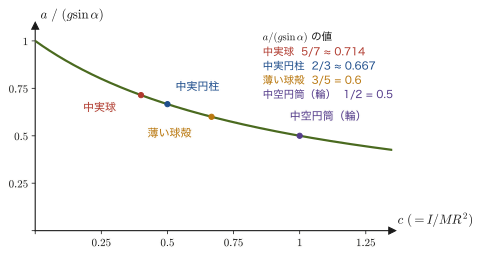

第10章質点系と剛体 — 重心・慣性モーメント・回転の運動方程式
これまでの章では，物体はすべて「大きさをもたない点」——質点（point particle）——として扱ってきた．質点にはたらく力を合計して運動方程式 $m\bm{\ddot r}=\bm{F}$ を立てれば，位置 $\bm r(t)$ がすべて決まった．しかし，現実の物体には必ず大きさがある．野球のバットを振れば，バットの重心は放物線を描きながら，同時にバット自身がくるくると回転する．坂道を転がるボールは，坂を下るという「並進」と，自分自身が回るという「回転」を同時に行っている．フィギュアスケーターが腕を縮めると回転が速くなる——これも質点の運動方程式だけでは説明できない．
大きさをもつ物体（質点系・剛体）の運動を記述するには，運動方程式が2種類必要になる．1つは，物体全体を代表する1点——重心（center of mass）——が，あたかも1個の質点であるかのように従う運動方程式．もう1つは，その重心のまわりに物体が「どれだけ回転しにくいか」を表す新しい量——慣性モーメント（moment of inertia）——を使って書かれる，回転についての運動方程式である．高校物理でも「剛体のつり合い」でモーメント（力のモーメントのつり合い）を扱ったはずだが，そこでは物体は静止している場合だけを考えた．この章では，物体が実際に回転運動しているときに，力のモーメントがどのように角速度の変化を引き起こすかを，運動方程式として定式化する．
本章では，まず質点系の重心と重心の運動方程式を確認し，慣性モーメントの定義を与える．そのうえで，棒（一端まわりと重心まわり）と球（球座標による直接積分と，薄い円板の積み重ねによる別解の2通り）について具体的に計算する．さらに，剛体の回転の運動方程式 $N=I\dot\omega$，角運動量保存則，回転運動エネルギー，平行軸の定理・直交軸の定理，代表的な形の慣性モーメントの一覧，そして「すべらずに転がる運動」と「実体振り子」という2つの具体的な応用を通して，剛体力学の基礎を一通り組み立てる．
- 質点系の重心の定義と，内力が打ち消し合うことから導かれる重心の運動方程式 $M\bm{\ddot r}_{\mathrm{cm}}=\sum\bm F_{\mathrm{ext}}$
- 慣性モーメント $I=\sum_i m_ir_i^2=\int r^2\rho\,\dd V$ の定義と，棒（端まわり・重心まわり）・球（2通りの方法）についての具体的な計算
- 平行軸の定理 $I=I_{\mathrm{cm}}+Md^2$・直交軸の定理 $I_z=I_x+I_y$ と，代表的な形の慣性モーメントの一覧
- 剛体の固定軸まわりの回転の運動方程式 $L=I\omega,\ N=I\dot\omega$，角運動量保存則，回転運動エネルギー $K_{\mathrm{rot}}=\tfrac12I\omega^2$
- すべらずに転がる運動（斜面を転がる球・円柱の加速度）と，実体振り子の周期の導出
もとにしたノート：望月泰英『物理学ノート 力学』 pp. 29–30．
10.1 質点系の重心と重心の運動方程式
大きさをもつ物体を扱う第一歩として，まず物体を「たくさんの質点の集まり」（質点系，system of particles）とみなすことから始める．質量 $m_i\ [\mathrm{kg}]$，位置ベクトル $\bm r_i$ の質点が $i=1,2,\dots,n$ 個集まっているとしよう（後で，質点の数を無限に増やして連続体の極限をとれば，これがそのまま「剛体」になる）．
定義10.1 質点系の重心
質点系の全質量を $M=\sum_i m_i$ とするとき，
\begin{equation} \bm r_{\mathrm{cm}}\equiv\frac{1}{M}\sum_i m_i\bm r_i \label{eq:10-cm-def} \end{equation}で定まる点 $\bm r_{\mathrm{cm}}$ を，この質点系の重心（center of mass，しばしば添字 cm をつけて表す）という．連続体（質量が連続的に分布した物体）の場合は，和 $\sum_i$ を積分 $\int\cdots\dd m$（$\dd m=\rho\,\dd V$，$\rho$ は密度．第3章の曲率半径 $\rho$ とは別の量である）に置き換えて，
$$ \bm r_{\mathrm{cm}}=\frac{1}{M}\int \bm r\,\dd m=\frac{1}{M}\int_V \bm r\,\rho\,\dd V $$と定義する．重心は「質量で重みをつけた位置の平均値」であり，物体の形そのものではなく，質量の分布の仕方によって決まる点である（物体の外にあってもよい——例えばドーナツ形の物体の重心は，物体の中心の穴の部分にある）．
イメージ：てこのつり合いと同じ式
高校物理で「てこのつり合い」を考えたとき，支点から距離 $r_1,r_2$ の位置に質量 $m_1,m_2$ のおもりをのせてつり合う条件は $m_1r_1=m_2r_2$ であった．これは重心の定義式とまったく同じ内容である．支点を原点にとり，$m_1$ を $x=-r_1$（左側），$m_2$ を $x=+r_2$（右側）に置くと，式 \eqref{eq:10-cm-def} は $x_{\mathrm{cm}}=(-m_1r_1+m_2r_2)/(m_1+m_2)$ となる．「支点が重心である」（$x_{\mathrm{cm}}=0$）ことは $m_1r_1=m_2r_2$ と同値であり，これが高校で習ったてこのつり合いの式そのものである．つまり「てこがつり合う」とは「支点が重心の位置にある」ことにほかならない．式 \eqref{eq:10-cm-def} は，このなじみ深い関係を，2つよりも多くの——さらには連続的に分布した——質点の集まりに一般化したものである．
次に，この重心がどのような運動方程式に従うかを調べる．質点 $i$ にはたらく力を，質点系の外部から受ける力 $\bm F_i^{\mathrm{ext}}$（外力）と，質点系を構成する他の質点 $j$ から受ける力 $\bm F_{ij}^{\mathrm{int}}$（内力，$j\neq i$ について和をとる）とに分ける（内力と外力の区別，作用・反作用の法則については第2章 2.3節，多数の質点の運動量保存則は2.4節を参照）．質点 $i$ についてのニュートンの運動方程式（第2章）は，
$$ m_i\bm{\ddot r}_i=\bm F_i^{\mathrm{ext}}+\sum_{j\neq i}\bm F_{ij}^{\mathrm{int}} $$である．これを，質点系に含まれるすべての質点 $i=1,\dots,n$ について足し合わせる．
導出：重心の運動方程式
両辺を $i$ について和をとると，
$$ \sum_i m_i\bm{\ddot r}_i=\sum_i\bm F_i^{\mathrm{ext}}+\sum_i\sum_{j\neq i}\bm F_{ij}^{\mathrm{int}} $$左辺は，式 \eqref{eq:10-cm-def} を時間で2回微分した $M\bm{\ddot r}_{\mathrm{cm}}=\sum_i m_i\bm{\ddot r}_i$（$m_i$ は定数なので微分と和の順序を交換してよい）にほかならない．右辺の第1項 $\sum_i\bm F_i^{\mathrm{ext}}$ は，質点系全体が外部から受ける力の合計であり，これを $\bm F_{\mathrm{ext}}\equiv\sum_i\bm F_i^{\mathrm{ext}}$ と書く．問題は右辺第2項の内力の和である．ここでニュートンの運動の第3法則（作用・反作用の法則）を使う．質点 $i$ が質点 $j$ から受ける力と，質点 $j$ が質点 $i$ から受ける力は，大きさが等しく向きが逆だから，
$$ \bm F_{ij}^{\mathrm{int}}=-\bm F_{ji}^{\mathrm{int}} $$である．2重和 $\sum_i\sum_{j\neq i}\bm F_{ij}^{\mathrm{int}}$ には，質点の組 $\{i,j\}$ ごとに，$\bm F_{ij}^{\mathrm{int}}$（$j$ から $i$ が受ける力）と $\bm F_{ji}^{\mathrm{int}}$（$i$ から $j$ が受ける力）の2つの力が，1回ずつ現れる．たとえば2質点の場合，和は $\bm F_{12}^{\mathrm{int}}+\bm F_{21}^{\mathrm{int}}=\bm 0$ である．一般の場合も，組ごとに作用・反作用の2つの力の和が $\bm 0$ になるので，全体の和も $\bm 0$ になる：
$$ \sum_i\sum_{j\neq i}\bm F_{ij}^{\mathrm{int}}=\sum_{\{i,j\}}\bigl(\bm F_{ij}^{\mathrm{int}}+\bm F_{ji}^{\mathrm{int}}\bigr)=\bm 0 $$以上をまとめると，
\begin{equation} M\bm{\ddot r}_{\mathrm{cm}}=\bm F_{\mathrm{ext}} \label{eq:10-cm-eom} \end{equation}が得られる．
（導出終わり）
定理10.1 重心の運動方程式
質点系（あるいは剛体）の重心は，その全質量 $M$ を1点に集め，外力の合計 $\bm F_{\mathrm{ext}}$ だけを受ける1個の質点であるかのように運動する：
$$ M\bm{\ddot r}_{\mathrm{cm}}=\bm F_{\mathrm{ext}}=\sum_i\bm F_i^{\mathrm{ext}} $$質点系の内部でどんなに複雑な力（摩擦・張力・分子間力など）がはたらいていても，それらは作用・反作用の法則によって重心の運動には一切影響しない．
この定理10.1は，非常に強力である．例えば，バットや棒を宙に放り投げて回転させながら飛ばしても，バット内部の各点にどんな複雑な力がはたらいていようと，重心だけに注目すれば，重力だけを受ける1個の質点として単純な放物線を描く．冒頭で述べた「バットの重心が放物線を描きながら，バット自身が回転する」という現象は，まさにこの定理と，次節以降で見る「重心まわりの回転の運動方程式」の組み合わせによって説明される．
例題10.1 2質点系の重心と重心の運動方程式
質量 $m_1=2\ \mathrm{kg}$ の質点が $x_1=0\ \mathrm m$，質量 $m_2=3\ \mathrm{kg}$ の質点が $x_2=5\ \mathrm m$ の位置にある（1次元，$x$ 軸上）．(1) この2質点系の重心の位置 $x_{\mathrm{cm}}$ を求めよ．(2) さらに，質点1に $x$ 軸正の向きに $F_1=4\ \mathrm N$，質点2に $x$ 軸負の向きに大きさ $6\ \mathrm N$ の外力（すなわち $F_2=-6\ \mathrm N$）が加わっているとき，重心の加速度 $\ddot x_{\mathrm{cm}}$ を求めよ．
解答 (1) 式 \eqref{eq:10-cm-def} より，
$$ x_{\mathrm{cm}}=\frac{m_1x_1+m_2x_2}{m_1+m_2}=\frac{2\times0+3\times5}{2+3}=\frac{15}{5}=3\ \mathrm m $$（$m_2$ の方が重いので，重心は中点 $2.5\ \mathrm m$ より $m_2$ 側に寄っている——図10.1のとおりである）．
(2) 定理10.1（式 \eqref{eq:10-cm-eom}）より，重心の運動方程式は全質量 $M=m_1+m_2=5\ \mathrm{kg}$ と外力の合計 $F_{\mathrm{ext}}=F_1+F_2$ だけで決まり，2質点間にどんな内力（例えば2質点がばねでつながれているなど）がはたらいていても関係ない：
$$ \ddot x_{\mathrm{cm}}=\frac{F_{\mathrm{ext}}}{M}=\frac{F_1+F_2}{m_1+m_2}=\frac{4+(-6)}{5}=\frac{-2}{5}=-0.4\ \mathrm{m/s^2} $$（次元の確認：$[\mathrm N]/[\mathrm{kg}]=[\mathrm{kg\,m/s^2}]/[\mathrm{kg}]=[\mathrm{m/s^2}]$ で正しい）．
例題10.2 密度が一様でない棒の重心
長さ $\ell$ の細い棒が $x$ 軸に沿って $0\le x\le\ell$ に置かれている．線密度（単位長さあたりの質量，$\mathrm{kg/m}$）が $\rho(x)=\rho_0\left(1+\dfrac{x}{\ell}\right)$（$\rho_0$ は定数）であるとき，重心の位置 $x_{\mathrm{cm}}$ を求めよ．また，密度が一様な棒（$\rho(x)=\rho_0$）の重心が中点 $\ell/2$ であることも，同じ式で確かめよ．
解答 連続体の重心の定義（定義10.1の積分形）を1次元で書くと，$\dd m=\rho(x)\,\dd x$ より $x_{\mathrm{cm}}=\dfrac{1}{M}\displaystyle\int_0^{\ell}x\,\rho(x)\,\dd x$ である．まず全質量 $M$ を求める：
$$ M=\int_0^{\ell}\rho_0\left(1+\frac{x}{\ell}\right)\dd x=\rho_0\left[x+\frac{x^2}{2\ell}\right]_0^{\ell}=\rho_0\left(\ell+\frac{\ell}{2}\right)=\frac32\rho_0\ell $$次に，位置で重みをつけた積分（1次のモーメント）を求める：
$$ \int_0^{\ell}x\,\rho_0\left(1+\frac{x}{\ell}\right)\dd x=\rho_0\int_0^{\ell}\left(x+\frac{x^2}{\ell}\right)\dd x=\rho_0\left[\frac{x^2}{2}+\frac{x^3}{3\ell}\right]_0^{\ell}=\rho_0\left(\frac{\ell^2}{2}+\frac{\ell^2}{3}\right)=\frac56\rho_0\ell^2 $$したがって，
$$ x_{\mathrm{cm}}=\frac{\frac56\rho_0\ell^2}{\frac32\rho_0\ell}=\frac56\cdot\frac23\,\ell=\frac59\,\ell\approx0.556\,\ell $$である．中点 $\ell/2=0.5\,\ell$ より，密度の大きい $x=\ell$ 側に寄っている．一様な棒（$\rho=\rho_0$）の場合は，$M=\rho_0\ell$，$\int_0^{\ell}x\rho_0\,\dd x=\rho_0\ell^2/2$ なので $x_{\mathrm{cm}}=\ell/2$ となり，重心は中点である（次元の確認：$x_{\mathrm{cm}}$ は長さの次元をもつ）．
10.2 大きさをもつ物体の運動 — 剛体を扱うための2つの方程式
前節で見た重心の運動方程式 $M\bm{\ddot r}_{\mathrm{cm}}=\bm F_{\mathrm{ext}}$ は，質点系の重心が「どこに」あるかだけを教えてくれる．しかし，大きさをもつ物体（剛体）の運動は，それだけでは決まらない．物体が重心のまわりにどのように向きを変えていくか——回転——も知る必要がある．質点（大きさを持たない点）では，そもそも「自転」という概念自体が意味をなさないので回転を考える必要がなかったが，質点系・剛体（大きさを持つ）では，物体の各部分が重心のまわりに動くという，もう1つの自由度が生まれる．
定義10.2 剛体
どの2点のあいだの距離も時間がたっても変わらない，理想化された物体を剛体（rigid body）という．
現実の物体は，力を受けると少しは変形する．しかし，変形が運動全体に比べて無視できるほど小さいとき（鉄の棒を軽く振るときなど），その物体は剛体とみなせる．剛体の位置と向きは，重心の位置（3個の数）と，重心のまわりの向き（3個の数）で決まる．この章では，剛体の回転のうち，回転軸の向きが変わらない場合——固定された軸のまわりの回転や，斜面を転がる球のように向きが変わらない軸のまわりの回転——だけを扱う（軸の向きが変わる一般の3次元回転では，慣性モーメントが方向によって異なる値をとる「慣性テンソル」が必要になる．10.8節で少し触れる）．
この状況を，具体的な例で見てみよう．傾斜角 $\alpha$ のなめらかでない（摩擦のある）斜面の上を，1個の一様な球が転がり落ちる場面を考える（図10.2）．球には，重力の斜面方向成分 $Mg\sin\alpha$（斜面を下る向き）と，斜面から受ける静止摩擦力 $F_{\mathrm s}$（斜面に沿って上向き．重心の並進をおくらせ，同時に球を回転させる向き）がはたらく．球の重心の運動方程式（定理10.1，斜面に沿う方向の成分）だけを考えると，
$$ Ma=Mg\sin\alpha-F_{\mathrm s} $$という1本の式が立つ．しかし，この式には未知数が $a$（重心の加速度）と $F_{\mathrm s}$（静止摩擦力の大きさ）の2つ含まれているのに対し，式は1本しかない——これだけでは $a$ も $F_{\mathrm s}$ も決められない．球が「転がり落ちる」ためには，球自身が同時に自転しなければならないから，もう1本，球の回転がどのように変化するかを表す方程式が必要になるのである．この，見えている式（重心の並進運動の式）だけでは閉じない状況こそが，「大きさをもつ物体には，重心の運動方程式と回転の運動方程式の両方が必要である」ということの具体的な意味である．
イメージ：なぜ回転の運動方程式が独立に必要なのか
重心の運動方程式（式 \eqref{eq:10-cm-eom}）は，物体にはたらく力を単純に合計（ベクトル和）したものだけで決まり，それぞれの力がどこにはたらいているかという情報は失われている．例えば，図10.2の球にはたらく重力成分 $Mg\sin\alpha$ と摩擦力 $F_{\mathrm s}$ を，向きはそのままに，2つとも球の中心の1点に集めて考えても，重心の運動方程式としては全く同じ式になる．しかし実際には，摩擦力は球の表面（接触点）にはたらいており，中心からずれた点にはたらく力は，物体を回転させる効果（力のモーメント）をもつ．この「力がどこにはたらくか」という情報は，回転の運動方程式（10.8節で導く $N=I\dot\omega$）でなければ捉えられない．力の合計（並進）と，力のモーメントの合計（回転）は，一般には独立な2種類の情報であり，剛体の運動を完全に決めるには両方が必要になる．
回転の運動方程式を立てるには，物体が「回転のしにくさ」をどれだけ持っているかを表す量——慣性モーメント——がまず必要になる．そこで次節から，慣性モーメントの定義と，具体的な形（棒・球）についての計算を行う．回転の運動方程式そのもの（$N=I\dot\omega$）の導出は，慣性モーメントが定義できてから10.8節で行い，図10.2の斜面の問題は10.9節で実際に解いて決着をつける．
例題10.3 斜面上の球にはたらく重力の成分
図10.2のように，傾斜角 $\alpha=30^\circ$ の斜面上に質量 $M=1\ \mathrm{kg}$ の球がある．重力 $Mg$（$g=9.8\ \mathrm{m/s^2}$）を，斜面に沿う成分と斜面に垂直な成分に分解して，それぞれの大きさを求めよ．また，斜面に垂直な方向には球は加速しないとして，斜面が球に及ぼす垂直抗力の大きさ $F_{\mathrm N}$ を求めよ．
解答 重力は鉛直下向きで，斜面の傾きが $\alpha$ なので，斜面に沿う成分（斜面を下る向き）と斜面に垂直な成分（斜面に押しつける向き）の大きさはそれぞれ，
$$ Mg\sin\alpha=1\times9.8\times\sin30^\circ=9.8\times0.5=4.9\ \mathrm N $$ $$ Mg\cos\alpha=1\times9.8\times\cos30^\circ=9.8\times0.8660\approx8.49\ \mathrm N $$である（確認：$\sqrt{4.9^2+8.49^2}=\sqrt{24.0+72.0}\approx9.8\ \mathrm N=Mg$ で，2つの成分は元の重力の大きさに戻る）．斜面に垂直な方向の力のつり合いから，垂直抗力の大きさは $F_{\mathrm N}=Mg\cos\alpha\approx8.49\ \mathrm N$ である（この章では，記号 $N$ を力のモーメントに使うので，垂直抗力には $F_{\mathrm N}$ を使う）．重力の斜面方向成分 $4.9\ \mathrm N$ に対して，球が実際に受ける摩擦力 $F_{\mathrm s}$ がどれだけになるかは，回転の運動方程式が使えるようになる10.9節で求める（例題10.12）．
10.3 慣性モーメントの定義
質点の並進運動では，「動かしにくさ」を表す量が質量 $m$ であった（運動方程式 $m\ddot x=F$ で，同じ力 $F$ に対して $m$ が大きいほど加速度 $\ddot x$ は小さい）．回転運動にも，これと同じ役割を果たす量がある．それが慣性モーメント（moment of inertia）である．
まず，日常の実感から入ろう．重い扉を押すとき，蝶番（ちょうつがい）のすぐ近くを押すのと，ドアノブのある端を押すのとでは，同じ力でも手ごたえがまるで違う．蝶番の近くを押すと，扉はなかなか回らない．また，扉の質量が同じでも，質量が蝶番から遠くに集まっている扉ほど動かしにくい．回転させにくさは，質量だけでなく，質量が回転軸からどれだけ離れているかにも依存するのである．
これを式で見よう．回転軸から距離 $r_i$ の位置にある質量 $m_i$ の質点が，角速度 $\omega\ [\mathrm{rad/s}]$ で軸のまわりに円運動しているとき，その速さは $v_i=r_i\omega$（高校物理の円運動の公式）である．この質点の運動エネルギーは
$$ \frac12m_iv_i^2=\frac12m_i(r_i\omega)^2=\frac12\bigl(m_ir_i^2\bigr)\omega^2 $$であり，全体（質点が何個あってもよい）では $K=\tfrac12\bigl(\sum_i m_ir_i^2\bigr)\omega^2$ となる．並進運動の運動エネルギー $\tfrac12mv^2$ と見比べると，質量 $m$ が $\sum_i m_ir_i^2$ に，速さ $v$ が角速度 $\omega$ に置き換わった形をしている．この $\sum_im_ir_i^2$ こそが，回転における「質量」の役割を果たす量であり，次のように定義する（$L=I\omega$，$N=I\dot\omega$ の形になることも，10.8節で確かめる）．
定義10.3 慣性モーメント
ある回転軸のまわりに，質量 $m_i$ の質点が軸から距離 $r_i$ の位置に $n$ 個分布しているとき，この軸のまわりの慣性モーメント $I\ [\mathrm{kg\,m^2}]$ を
\begin{equation} I=\sum_i m_ir_i^2 \label{eq:10-I-def} \end{equation}と定義する．質量が連続的に分布する物体（密度 $\rho\ [\mathrm{kg/m^3}]$）の場合は，和を積分に置き換えて，
$$ I=\int r^2\rho\,\dd V $$である．ここで $r$ は，積分される微小体積 $\dd V$ から回転軸までの距離であって，原点からの距離（10.1節で使った位置ベクトルの大きさ）ではないことに注意する．物体の形に応じて，積分は次のように書き分けられる：
$$ \text{棒（線状）：}\ I=\int_l r^2\rho\,\dd r,\qquad \text{面（板状）：}\ I=\int_S r^2\rho\,\dd S,\qquad \text{立体（球など）：}\ I=\int_V r^2\rho\,\dd V $$（積分領域の $l$ は棒の線上，$S$ は面上，$V$ は立体の内部を表す．棒の長さ $\ell$ とは別のものである．棒の場合の $\rho$ は線密度 $[\mathrm{kg/m}]$，面の場合は面密度 $[\mathrm{kg/m^2}]$，立体の場合は体積密度 $[\mathrm{kg/m^3}]$ を表す——いずれも「単位長さ・単位面積・単位体積あたりの質量」という意味は共通である）．
イメージ：慣性とは「動きにくさ」である
式 \eqref{eq:10-I-def} を見ると，慣性モーメントは，各質点の質量 $m_i$ に，回転軸からの距離の2乗 $r_i^2$ を掛けて足し合わせたものになっている．同じ質量でも，回転軸から遠くに分布しているほど，$r_i^2$ が大きく効いて慣性モーメントは大きくなる——つまり回転させにくくなる．フィギュアスケーターが腕を縮めると回転が速くなるのは，質量（腕の質量）はそのままに，回転軸（体の中心軸）からの距離 $r$ を小さくすることで，慣性モーメント $I$ を小さくしているからである（角運動量保存則 $L=I\omega=\text{一定}$ については10.8節で扱い，スケーターの数値例も計算する）．「慣性」とは，一般に「（外から働きかけない限り）今の運動状態を保とうとする性質＝動きにくさ」を意味する言葉であり，並進運動における質量 $m$ と，回転運動における慣性モーメント $I$ は，どちらも「動きにくさ」を数値化したものという点で共通している．
例題10.4 離散的な質点系の慣性モーメント
ある回転軸のまわりに，質量 $m_1=1.0\ \mathrm{kg}$（軸から $r_1=0.5\ \mathrm m$），質量 $m_2=2.0\ \mathrm{kg}$（軸から $r_2=1.0\ \mathrm m$），質量 $m_3=1.5\ \mathrm{kg}$（軸から $r_3=1.5\ \mathrm m$）の3つの質点が固定されている．この軸のまわりの慣性モーメント $I$ を求めよ．
解答 定義10.3（式 \eqref{eq:10-I-def}）より，
$$ I=\sum_{i=1}^{3}m_ir_i^2=1.0\times0.5^2+2.0\times1.0^2+1.5\times1.5^2 $$ $$ =1.0\times0.25+2.0\times1.0+1.5\times2.25=0.25+2.0+3.375=5.625\ \mathrm{kg\,m^2} $$（最も軸から遠い $m_3$ が，質量自体は $m_2$ より小さいにもかかわらず，$r_3^2=2.25$ が $r_2^2=1.0$ より大きいために，慣性モーメントへの寄与（$3.375\ \mathrm{kg\,m^2}$）は $m_2$ の寄与（$2.0\ \mathrm{kg\,m^2}$）より大きい——「軸からの距離」が2乗で効くことがよくわかる）．
10.4 棒の慣性モーメント — 端まわりと重心まわり
定義10.3を，最も単純な形——質量 $M$，長さ $\ell$ の一様な細い棒——に実際に適用してみる．棒は太さが無視できるほど細く，回転軸は棒に垂直で棒と交わるものとする．「一様」とは，密度（この場合は線密度）$\rho$ が棒のどの場所でも同じであることを意味し，全質量が $M=\rho\ell$ であることから，線密度は
$$ \rho=\frac{M}{\ell}\ \ [\mathrm{kg/m}] $$と表せる．棒を，軸方向に微小な長さ $\dd r$ の小片に分割すると，各小片の質量は $\dd m=\rho\,\dd r$ であり，これを回転軸からの距離 $r$ の2乗と掛けて棒全体にわたって積分すれば，慣性モーメント $I=\int r^2\rho\,\dd r$（定義10.3の「棒」の場合の式）が求まる．積分区間——つまり回転軸をどこに固定するか——によって，同じ棒でも慣性モーメントの値は変わる．ここでは，代表的な2つの場合（一端を軸とする場合と，重心を軸とする場合）を計算する．
10.4.1 棒の一端を固定した場合
まず，棒の一端を原点 $O$ にとり，そこを通り棒に垂直な軸のまわりの回転を考える（図10.3）．棒に沿った座標を $r$（$0\le r\le\ell$）とすると，線密度は一様だから $\rho=M/\ell$ であり，
導出：棒の一端まわりの慣性モーメント
定義10.3の積分に，$\rho=M/\ell$（$r$ によらない定数）を代入する：
\begin{equation} I=\int_0^{\ell}r^2\cdot\frac{M}{\ell}\,\dd r \label{eq:10-I-end-integral} \end{equation}$M/\ell$ は $r$ に依存しない定数なので積分の外に出せる．$r^2$ の原始関数は $r^3/3$ だから，
$$ I=\frac{M}{\ell}\left[\frac{1}{3}r^3\right]_0^{\ell}=\frac{M}{\ell}\left(\frac{\ell^3}{3}-0\right)=\frac{M\ell^3}{3\ell} $$分子・分母を $\ell$ で約分すると，
\begin{equation} I_{\text{端}}=\frac{M\ell^2}{3} \label{eq:10-I-end} \end{equation}が得られる（次元の確認：$[\mathrm{kg}][\mathrm m^2]=[\mathrm{kg\,m^2}]$ で慣性モーメントの単位と一致する）．
（導出終わり）
10.4.2 棒の重心を固定した場合
次に，同じ棒を，今度は重心（棒の中点，$\ell/2$ の位置）を通り棒に垂直な軸のまわりに回転させる場合を考える（図10.4）．一様な棒の重心が中点であることは，例題10.2の最後の計算で確かめたとおりである．棒の中点を原点にとると，積分区間は $-\ell/2\le r\le \ell/2$ になる．
導出：棒の重心まわりの慣性モーメント
積分区間が変わるだけで，被積分関数は10.4.1と同じである：
\begin{equation} I=\int_{-\frac{\ell}{2}}^{\frac{\ell}{2}}r^2\cdot\frac{M}{\ell}\,\dd r=\frac{M}{\ell}\left[\frac{1}{3}r^3\right]_{-\frac{\ell}{2}}^{\frac{\ell}{2}} \label{eq:10-I-cm-rod-integral} \end{equation}定積分の上端・下端を代入すると，
$$ \frac{M}{\ell}\left(\frac{1}{3}\left(\frac{\ell}{2}\right)^3-\frac{1}{3}\left(-\frac{\ell}{2}\right)^3\right) =\frac{M}{\ell}\left(\frac{\ell^3}{24}+\frac{\ell^3}{24}\right) =\frac{M}{\ell}\cdot\frac{\ell^3}{12}=\frac{M\ell^3}{12\ell} $$ここで $(-\ell/2)^3=-\ell^3/8$ なので，下端の項 $-\tfrac13(-\ell/2)^3$ は $+\ell^3/24$ となり，上端の項 $\ell^3/24$ と同じ符号で足し合わされる．これは，被積分関数 $r^2$ が偶関数（$(-r)^2=r^2$）であるために，$-\ell/2$ から $\ell/2$ までの積分が，$0$ から $\ell/2$ までの積分のちょうど2倍になることの表れである：
$$ \int_{-\ell/2}^{\ell/2}r^2\,\dd r=2\int_0^{\ell/2}r^2\,\dd r=2\cdot\frac13\left(\frac{\ell}{2}\right)^3=\frac{\ell^3}{12} $$$\ell$ で約分して，
\begin{equation} I_{\text{cm}}=\frac{M\ell^2}{12} \label{eq:10-I-cm-rod} \end{equation}が得られる．
（導出終わり）
考察：端まわりと重心まわり，どちらが回転しにくいか
2つの結果を比べると，
$$ I_{\text{端}}=\frac{M\ell^2}{3},\qquad I_{\text{cm}}=\frac{M\ell^2}{12},\qquad \frac{I_{\text{端}}}{I_{\text{cm}}}=4 $$であり，端まわりの慣性モーメントの方が，重心まわりの4倍も大きい．これは，10.3節で述べた「回転軸から遠くに質量が分布しているほど慣性モーメントは大きい」ということの直接の表れである——棒の一端を固定すると，棒のもう一方の端（反対側の端）は軸から最大 $\ell$ の距離まで離れるのに対し，重心を固定すると，棒のどちらの端も軸から最大 $\ell/2$ の距離にしかならない．慣性モーメントが大きいということは，同じ力のモーメントを加えても角加速度が生じにくい，つまりより回転させにくいということを意味する（この関係は10.8節で回転の運動方程式 $N=I\dot\omega$ として定式化する）．端を固定したドアの方が，中央を軸にした回転扉よりも「重く」感じられる——というのは，この慣性モーメントの違いの日常的な現れである．なお，この2つの結果は，10.7節で学ぶ平行軸の定理 $I_{\text{端}}=I_{\text{cm}}+M(\ell/2)^2$ によって統一的に理解できることをあらかじめ予告しておく．
例題10.5 具体的な数値による棒の慣性モーメントの計算
質量 $M=2\ \mathrm{kg}$，長さ $\ell=1\ \mathrm m$ の一様な棒がある．(1) 一端を固定した場合の慣性モーメント $I_{\text{端}}$ を求めよ．(2) 重心を固定した場合の慣性モーメント $I_{\text{cm}}$ を求め，(1)との比を求めよ．
解答 (1) 式 \eqref{eq:10-I-end} より，
$$ I_{\text{端}}=\frac{M\ell^2}{3}=\frac{2\times1^2}{3}=\frac{2}{3}\approx0.667\ \mathrm{kg\,m^2} $$(2) 式 \eqref{eq:10-I-cm-rod} より，
$$ I_{\text{cm}}=\frac{M\ell^2}{12}=\frac{2\times1^2}{12}=\frac{1}{6}\approx0.167\ \mathrm{kg\,m^2} $$比は $I_{\text{端}}/I_{\text{cm}}=(2/3)/(1/6)=4$ であり，先の考察のとおり端まわりが重心まわりのちょうど4倍になっている．
10.5 球の慣性モーメント（I）— 球座標による計算
次に，一様な質量分布をもつ球（半径 $R\ [\mathrm m]$，質量 $M$）の，中心を通る軸のまわりの慣性モーメントを求める．これは，棒の場合よりもずっと計算が込み入っており，本章全体の中でも最も計算量の多い積分（3重積分・球座標への変数変換・三角関数の恒等式）になる．大学数学（AD 02）第7章で学んだ重積分・変数変換・球座標を存分に使うので，必要に応じて7.3節（ヤコビアン）と7.7節（球の体積と表面積）を参照しながら読み進めてほしい．
球は一様な密度をもつので，密度 $\rho\ [\mathrm{kg/m^3}]$ は，全質量 $M$ を球の体積 $\tfrac43\pi R^3$ で割った定数である：
$$ \rho=\frac{M}{\frac{4}{3}\pi R^3} $$注意：「$r$」の意味が2通りある
慣性モーメントの定義 $I=\int r^2\rho\,\dd V$ の $r$ は，回転軸からの距離であった．ところが次の球座標 $(r,\theta,\varphi)$ の $r$ は，原点（球の中心）からの距離である．この2つはまったく別の量なので，この節では，回転軸からの距離を $r_\perp$（垂直な距離という意味）と書いて，球座標の動径 $r$ と区別する．
回転軸を $z$ 軸にとる．定義10.3の体積積分は $I=\int_V r_\perp^2\rho\,\dd V$ と書ける．直交座標 $(x,y,z)$ で，$z$ 軸からの距離は $r_\perp=\sqrt{x^2+y^2}$ だから，その2乗は $r_\perp^2=x^2+y^2$ である（原点からの距離 $\sqrt{x^2+y^2+z^2}$ ではない）．したがって，
\begin{equation} I=\iiint_V r_\perp^2\rho\,\dd V=\iiint_V \rho\,\underline{\underline{(x^2+y^2)}}\,\dd x\,\dd y\,\dd z \label{eq:10-I-sphere-setup} \end{equation}と書ける（下線を引いた $x^2+y^2$ の部分が，$z$ 軸からの距離の2乗である）．なお，この式の $\dd x\,\dd y\,\dd z$ の部分は，次に座標を変換すると別の形の体積要素 $\dd V=|J|\,\dd r\,\dd\theta\,\dd\varphi$ に置き換わる（置き換える対象になる）部分である．
10.5.1 球座標への変数変換
この積分を直交座標のまま実行しようとすると，球の境界（$x^2+y^2+z^2\le R^2$）を表す積分範囲が複雑になって扱いにくい．そこで，球対称な領域の積分に適した球座標（spherical coordinates）$(r,\theta,\varphi)$ に変数変換する（AD 02 第7章7.7節で学んだ変換と同じである）：
$$ \begin{cases} x=r\sin\theta\cos\varphi\\ y=r\sin\theta\sin\varphi\\ z=r\cos\theta \end{cases} \qquad 0\le r\le R,\ \ 0\le\theta\le\pi,\ \ 0\le\varphi\le2\pi $$ここで $r$ は原点（球の中心）からの距離，$\theta$ は $z$ 軸からの傾き角（緯度に相当，天頂角），$\varphi$ は $xy$ 平面内の方位角である（図10.5）．図の点 $\mathrm P$ から $z$ 軸に下ろした垂線の長さ，つまり $z$ 軸からの距離は，$r\sin\theta$ である（$r$ の線分を $z$ 軸に垂直な方向に射影した長さ）．
変数を $(x,y,z)$ から $(r,\theta,\varphi)$ に変換すると，体積要素 $\dd x\,\dd y\,\dd z$ は，そのままの形では使えず，ヤコビアン（Jacobian）$|J|$ を掛けた $\dd V=|J|\,\dd r\,\dd\theta\,\dd\varphi$ に置き換える必要がある（AD 02 第7章7.3節）．ヤコビアンは，変換のヤコビ行列（各座標の偏微分を並べた行列）の行列式として定義される：
\begin{equation} |J|=\begin{vmatrix} \pdiff{x}{r} & \pdiff{x}{\theta} & \pdiff{x}{\varphi}\\[2pt] \pdiff{y}{r} & \pdiff{y}{\theta} & \pdiff{y}{\varphi}\\[2pt] \pdiff{z}{r} & \pdiff{z}{\theta} & \pdiff{z}{\varphi} \end{vmatrix} \label{eq:10-jacobian} \end{equation}各偏微分を実際に計算する．$x=r\sin\theta\cos\varphi$ を $r,\theta,\varphi$ で偏微分すると $\sin\theta\cos\varphi,\ r\cos\theta\cos\varphi,\ -r\sin\theta\sin\varphi$．$y=r\sin\theta\sin\varphi$ からは $\sin\theta\sin\varphi,\ r\cos\theta\sin\varphi,\ r\sin\theta\cos\varphi$．$z=r\cos\theta$ からは $\cos\theta,\ -r\sin\theta,\ 0$ である．これを行列に並べると，
$$ |J|=\begin{vmatrix} \sin\theta\cos\varphi & r\cos\theta\cos\varphi & -r\sin\theta\sin\varphi\\ \sin\theta\sin\varphi & r\cos\theta\sin\varphi & r\sin\theta\cos\varphi\\ \cos\theta & -r\sin\theta & 0 \end{vmatrix} $$となる．第3行で余因子展開する（第3行に0が含まれるので計算が楽である）．第3行第1列の要素 $\cos\theta$ に掛かる小行列式は $(r\cos\theta\cos\varphi)(r\sin\theta\cos\varphi)-(-r\sin\theta\sin\varphi)(r\cos\theta\sin\varphi)=r^2\sin\theta\cos\theta(\cos^2\varphi+\sin^2\varphi)=r^2\sin\theta\cos\theta$．第3行第2列の要素 $-r\sin\theta$ に掛かる小行列式は $(\sin\theta\cos\varphi)(r\sin\theta\cos\varphi)-(-r\sin\theta\sin\varphi)(\sin\theta\sin\varphi)=r\sin^2\theta$ で，符号は $(-1)^{3+2}=-1$ である．したがって，
$$ |J|=\cos\theta\cdot r^2\sin\theta\cos\theta-(-r\sin\theta)\cdot r\sin^2\theta=r^2\sin\theta\,(\cos^2\theta+\sin^2\theta)=r^2\sin\theta $$となる．したがって，体積要素は $\dd V=r^2\sin\theta\,\dd r\,\dd\theta\,\dd\varphi$ である．
イメージ：$r^2\sin\theta$ の意味
体積要素 $\dd V=r^2\sin\theta\,\dd r\,\dd\theta\,\dd\varphi$ は，図形的にも理解できる．点 $\mathrm P$ の近くで，$r$ を $\dd r$，$\theta$ を $\dd\theta$，$\varphi$ を $\dd\varphi$ だけ動かすと，小さな箱ができる．この箱の3辺の長さは，半径方向が $\dd r$，$\theta$ 方向（半径 $r$ の円の弧）が $r\,\dd\theta$，$\varphi$ 方向（$z$ 軸まわりの半径 $r\sin\theta$ の円の弧）が $r\sin\theta\,\dd\varphi$ である．3辺は互いに直交しているので，体積は積 $\dd r\cdot r\,\dd\theta\cdot r\sin\theta\,\dd\varphi=r^2\sin\theta\,\dd r\,\dd\theta\,\dd\varphi$ になり，ヤコビアンの計算結果と一致する．
10.5.2 積分の実行
導出：球の慣性モーメント（球座標）
球座標では，$z$ 軸からの距離の2乗は $r_\perp^2=x^2+y^2=(r\sin\theta\cos\varphi)^2+(r\sin\theta\sin\varphi)^2=r^2\sin^2\theta(\cos^2\varphi+\sin^2\varphi)=r^2\sin^2\theta$ になる（$\cos^2\varphi+\sin^2\varphi=1$ を使った）．これを式 \eqref{eq:10-I-sphere-setup} に代入し，体積要素も球座標のものに置き換えると，
\begin{equation} I=\int_0^{2\pi}\!\!\int_0^{\pi}\!\!\int_0^{R}\rho\cdot\underline{\underline{r^2\sin^2\theta}}\cdot\underline{r^2\sin\theta}\,\dd r\,\dd\theta\,\dd\varphi \label{eq:10-I-sphere-integral} \end{equation}となる（二重下線が「$z$ 軸からの距離の2乗」，一重下線がヤコビアン由来の体積要素である）．被積分関数を整理すると $\rho\,r^4\sin^3\theta$ になり，これは $r,\theta,\varphi$ それぞれについての関数の積の形（$\rho$ は定数）になっているので，3重積分は3つの1変数積分の積に分解できる．
まず $r$ について積分する．$r^4$ の原始関数は $r^5/5$ だから，
$$ \int_0^{R}r^4\,\dd r=\left[\frac{r^5}{5}\right]_0^{R}=\frac{R^5}{5} $$これを使うと，式 \eqref{eq:10-I-sphere-integral} は
$$ I=\frac{R^5}{5}\rho\int_0^{\pi}\sin^3\theta\,\dd\theta\int_0^{2\pi}\dd\varphi $$まで簡単になる．
次に $\theta$ について積分する．$\sin^3\theta$ をそのまま積分するには工夫が要る．ここでは3倍角の公式 $\sin3\theta=3\sin\theta-4\sin^3\theta$ を $\sin^3\theta$ について解いて，1次の $\sin$ の和に書き直す：
$$ \sin^3\theta=\frac{1}{4}\bigl(3\sin\theta-\sin3\theta\bigr) $$（確かめ方：$\sin3\theta=3\sin\theta-4\sin^3\theta$ を $\sin^3\theta$ について解くと $\sin^3\theta=\tfrac14(3\sin\theta-\sin3\theta)$ になる）．これを使うと，
$$ \int_0^{\pi}\sin^3\theta\,\dd\theta=\frac14\int_0^{\pi}\bigl(3\sin\theta-\sin3\theta\bigr)\,\dd\theta =\frac14\left[-3\cos\theta+\frac13\cos3\theta\right]_0^{\pi} $$$\theta=\pi$ で $\cos\pi=-1,\ \cos3\pi=-1$，$\theta=0$ で $\cos0=1,\ \cos0=1$ を代入すると，
$$ =\frac14\left[\left(3+\left(-\frac13\right)\right)-\left(-3+\frac13\right)\right] =\frac14\left(\frac{8}{3}+\frac{8}{3}\right)=\frac14\cdot\frac{16}{3}=\frac{4}{3} $$したがって $\displaystyle\int_0^{\pi}\sin^3\theta\,\dd\theta=\frac43$ である．（別の計算：$\sin^3\theta=(1-\cos^2\theta)\sin\theta$ と書き，$u=\cos\theta$ とおくと $\dd u=-\sin\theta\,\dd\theta$ で，積分区間 $\theta:0\to\pi$ は $u:1\to-1$ になるから，$\displaystyle\int_0^{\pi}\sin^3\theta\,\dd\theta=\int_{-1}^{1}(1-u^2)\,\dd u=\left[u-\frac{u^3}{3}\right]_{-1}^{1}=\frac43$ となって一致する．）
最後に $\varphi$ について積分する．被積分関数は定数1なので，
$$ \int_0^{2\pi}\dd\varphi=2\pi $$である．以上の3つの結果 $\dfrac{R^5}{5}$，$\dfrac43$，$2\pi$ を掛け合わせると，
\begin{equation} I=\frac{R^5}{5}\rho\cdot\frac43\cdot2\pi=\frac{8}{15}\pi\rho R^5 \label{eq:10-I-sphere-unreduced} \end{equation}が得られる．最後に，密度 $\rho=M\big/\tfrac43\pi R^3$ を代入する：
$$ I=\frac{8}{15}\pi R^5\cdot\frac{3M}{4\pi R^3} $$分子・分母をそれぞれ整理する．$\pi$ は分子・分母で約分され，$R^5/R^3=R^2$，係数は $\dfrac{8}{15}\times\dfrac{3}{4}=\dfrac{24}{60}=\dfrac25$ になるので，
\begin{equation} I_{\text{球}}=\frac{2}{5}MR^2 \label{eq:10-I-sphere-result} \end{equation}が得られる．
（導出終わり）
定理10.2 一様な球の中心を通る軸のまわりの慣性モーメント
質量 $M$，半径 $R$ の一様な球の，中心を通る任意の軸（球は完全に対称なので，どの向きの軸でもよい）のまわりの慣性モーメントは，
$$ I=\frac{2}{5}MR^2 $$である．
例題10.6 球の慣性モーメントの数値計算
質量 $M=5\ \mathrm{kg}$，半径 $R=0.2\ \mathrm m$ の一様な球の，中心を通る軸のまわりの慣性モーメントを求めよ．
解答 定理10.2（式 \eqref{eq:10-I-sphere-result}）より，
$$ I=\frac{2}{5}MR^2=\frac{2}{5}\times5\times0.2^2=2\times0.04=0.08\ \mathrm{kg\,m^2} $$（次元の確認：$[\mathrm{kg}]\times[\mathrm m^2]=[\mathrm{kg\,m^2}]$ で慣性モーメントの単位と一致）．
10.6 球の慣性モーメント（II）— 薄い円板の重ね合わせによる別解
10.5節では球座標を使って3重積分を実行した．同じ結果 $I=\tfrac25MR^2$ を，別の方法で確かめておくことは，計算の検算としても，慣性モーメントの理解を深めるうえでも価値がある．そこで本節では，球を「薄い円板を積み重ねたもの」とみなす，10.5節とは異なる方法で同じ結果を導く．
半径 $R$，質量 $M$ の一様な球を，回転軸（$z$ 軸）に垂直な，厚さ $\dd z$ の薄い円板に輪切りにすることを考える（図10.6）．中心から高さ $z$（$-R\le z\le R$）の位置での円板の半径 $r(z)$ は，球の方程式 $x^2+y^2+z^2=R^2$ より，
$$ r(z)=\sqrt{R^2-z^2} $$である（図の直角三角形 $R^2=z^2+r(z)^2$）．球は一様な密度 $\rho_0=M\big/\tfrac43\pi R^3$ をもつので，高さ $z$ にある厚さ $\dd z$ の円板の質量は，円板の体積 $\pi r(z)^2\,\dd z$ に密度を掛けて，
$$ \dd m=\rho_0\,\pi\,r(z)^2\,\dd z $$である．
導出：一様な円板の中心軸まわりの慣性モーメント
この方法を使うには，まず「一様な円板の，中心を通り面に垂直な軸のまわりの慣性モーメントが $\tfrac12mr^2$（$m$ は円板の質量，$r$ は円板の半径）である」という結果が必要である．これは，円板を半径 $r'$（$0\le r'\le r$），幅 $\dd r'$ の細い輪に分割し（面密度 $\sigma=m/(\pi r^2)$，輪の面積は $2\pi r'\,\dd r'$），定義10.3にしたがって積分すればよい：
$$ I_{\text{円板}}=\int_0^{r}(r')^2\cdot\sigma\cdot2\pi r'\,\dd r'=2\pi\sigma\int_0^{r}(r')^3\,\dd r'=2\pi\sigma\left[\frac{(r')^4}{4}\right]_0^{r}=2\pi\sigma\cdot\frac{r^4}{4}=\frac{\pi\sigma r^4}{2} $$ここに $\sigma=m/(\pi r^2)$ を代入すると，$I_{\text{円板}}=\dfrac{\pi r^4}{2}\cdot\dfrac{m}{\pi r^2}=\dfrac12mr^2$ となる．この式は，あとで10.7節の代表的な形の慣性モーメントの表にも登場する基本結果である．
（導出終わり）
導出：円板の重ね合わせによる球の慣性モーメント
高さ $z$ にある厚さ $\dd z$ の薄い円板（質量 $\dd m$，半径 $r(z)$）は，それ自身が「一様な円板」なので，上のボックスの結果より，$z$ 軸まわりの慣性モーメントへの寄与は
$$ \dd I=\frac12\,\dd m\,r(z)^2=\frac12\,\rho_0\,\pi\,r(z)^2\,\dd z\cdot r(z)^2=\frac{\pi\rho_0}{2}\,r(z)^4\,\dd z $$である．球全体の慣性モーメントは，これを $z=-R$ から $z=R$ まで積分（重ね合わせ）すればよい：
$$ I=\int_{-R}^{R}\frac{\pi\rho_0}{2}\,r(z)^4\,\dd z=\frac{\pi\rho_0}{2}\int_{-R}^{R}\bigl(R^2-z^2\bigr)^2\,\dd z $$（$r(z)^2=R^2-z^2$ なので $r(z)^4=(R^2-z^2)^2$ とした）．被積分関数を展開すると $(R^2-z^2)^2=R^4-2R^2z^2+z^4$ となるので，項ごとに積分する：
$$ \int_{-R}^{R}\bigl(R^4-2R^2z^2+z^4\bigr)\,\dd z =\left[R^4z-\frac{2R^2}{3}z^3+\frac{z^5}{5}\right]_{-R}^{R} $$$z=R$ と $z=-R$ を代入した差をとる（被積分関数は $z$ の偶関数なので，$0$ から $R$ までの2倍になる）：
$$ =2\left(R^4\cdot R-\frac{2R^2}{3}\cdot R^3+\frac{R^5}{5}\right) =2R^5\left(1-\frac23+\frac15\right) $$括弧の中を通分する（$1=\tfrac{15}{15},\ \tfrac23=\tfrac{10}{15},\ \tfrac15=\tfrac{3}{15}$）：
$$ 1-\frac23+\frac15=\frac{15-10+3}{15}=\frac{8}{15} $$したがって，
$$ \int_{-R}^{R}\bigl(R^2-z^2\bigr)^2\,\dd z=2R^5\cdot\frac{8}{15}=\frac{16}{15}R^5 $$これを $I$ の式に戻すと，
\begin{equation} I=\frac{\pi\rho_0}{2}\cdot\frac{16}{15}R^5=\frac{8\pi\rho_0}{15}R^5 \label{eq:10-I-sphere-disks} \end{equation}最後に $\rho_0=M\big/\tfrac43\pi R^3$ を代入すると，
$$ I=\frac{8\pi}{15}R^5\cdot\frac{3M}{4\pi R^3}=\frac{8}{15}\times\frac34\times MR^2=\frac{2}{5}MR^2 $$となり，10.5節（式 \eqref{eq:10-I-sphere-result}）とまったく同じ結果 $I=\tfrac25MR^2$ が得られた．
（導出終わり）
例題10.7 薄い球殻の慣性モーメント
質量 $M$，半径 $R$ の，質量が表面だけに一様に分布した薄い球殻（厚みの無視できる中空の球，例えばピンポン玉のようなもの）の，中心を通る軸まわりの慣性モーメントを求めよ．さらに，質量 $M=3\ \mathrm{kg}$，半径 $R=0.15\ \mathrm m$ の薄い球殻について慣性モーメントの数値を求め，同じ $M,R$ をもつ中実の球（定理10.2）と比較せよ．
解答 球殻は表面だけに質量があるので，10.5節の体積積分を，表面 $r=R$ 上の面積分に置き換える．面密度は $\sigma=M/(4\pi R^2)$（球の表面積 $4\pi R^2$ で割る）．球面上の面積要素は，球座標で $r=R$ に固定して $\theta$ と $\varphi$ を動かした小さな長方形（辺の長さ $R\,\dd\theta$ と $R\sin\theta\,\dd\varphi$）の面積なので，$\dd S=R^2\sin\theta\,\dd\theta\,\dd\varphi$ である．$z$ 軸からの距離の2乗は $R^2\sin^2\theta$ だから，
$$ I_{\text{殻}}=\int_0^{2\pi}\!\!\int_0^{\pi}\sigma\,R^2\sin^2\theta\cdot R^2\sin\theta\,\dd\theta\,\dd\varphi=\sigma R^4\int_0^{\pi}\sin^3\theta\,\dd\theta\int_0^{2\pi}\dd\varphi $$10.5節で求めた $\int_0^{\pi}\sin^3\theta\,\dd\theta=\tfrac43$ と $\int_0^{2\pi}\dd\varphi=2\pi$ を使うと，$I_{\text{殻}}=\sigma R^4\cdot\tfrac43\cdot2\pi=\tfrac{8\pi}{3}\sigma R^4$．$\sigma=M/(4\pi R^2)$ を代入して，
$$ I_{\text{殻}}=\frac{8\pi}{3}\cdot\frac{M}{4\pi R^2}\cdot R^4=\frac23MR^2 $$を得る．（検算：中実球の式 $I(R)=\tfrac{8\pi}{15}\rho R^5$ を $R$ で微分すると $\dd I=\tfrac{8\pi}{3}\rho R^4\,\dd R$ となる．これは，半径 $R$ と $R+\dd R$ のあいだの薄い球殻（質量 $\dd M=4\pi R^2\rho\,\dd R$）の寄与 $\tfrac23R^2\,\dd M=\tfrac{8\pi}{3}\rho R^4\,\dd R$ とちょうど一致する．中実球は，球殻を積み重ねたものでもあるのである．）
数値を代入すると，
$$ I_{\text{殻}}=\frac23MR^2=\frac23\times3\times0.15^2=2\times0.0225=0.045\ \mathrm{kg\,m^2} $$同じ $M,R$ の中実球は，定理10.2より $I_{\text{中実}}=\tfrac25MR^2=\tfrac25\times3\times0.0225=0.027\ \mathrm{kg\,m^2}$ である．比は
$$ \frac{I_{\text{殻}}}{I_{\text{中実}}}=\frac{2/3}{2/5}=\frac53\approx1.67 $$であり，同じ質量・半径でも，質量がすべて球の表面（軸から最も遠い場所）に集まっている球殻の方が，質量の一部が軸の近くにも分布する中実球より，慣性モーメントが大きい（回転させにくい）——これも「軸からの距離が2乗で効く」ことの表れである．（球殻の $I=cMR^2$ の係数 $c=2/3$ は，10.9節で転がり運動の加速度を求めるときにも使う．）
10.7 平行軸の定理・直交軸の定理と代表的な形の慣性モーメント
10.4節では，同じ棒でも回転軸を「端」に取るか「重心」に取るかで慣性モーメントが4倍も違うことを見た．そのたびに定義10.3の積分をゼロからやり直すのは非効率である．実は，重心を通る軸まわりの慣性モーメントさえわかっていれば，それと平行などんな軸まわりの慣性モーメントも，積分をやり直さずに求められる——これが平行軸の定理である．
10.7.1 平行軸の定理（シュタイナーの定理）
定理10.3 平行軸の定理（シュタイナーの定理）
質量 $M$ の剛体の，重心を通るある軸のまわりの慣性モーメントを $I_{\mathrm{cm}}$ とする．この軸と平行で，距離 $d$ だけ離れた別の軸のまわりの慣性モーメント $I$ は，
\begin{equation} I=I_{\mathrm{cm}}+Md^2 \label{eq:10-parallel-axis} \end{equation}である（平行軸の定理，シュタイナーの定理，parallel axis theorem）．
導出：平行軸の定理の証明
軸まわりの慣性モーメントは，各質点の軸からの垂直距離だけで決まる．そこで，各質点を軸に垂直な平面に射影して（軸に平行な方向の位置は慣性モーメントに影響しないので），この平面内で考える．重心を通る軸がこの平面と交わる点（重心の射影）を原点にとり，質点 $i$ の（この平面内での）位置ベクトルを $\bm s_i'$ とする（$|\bm s_i'|$ が，10.4節までの $r_i$ にあたる，重心軸からの距離）．重心の定義（式 \eqref{eq:10-cm-def} を，この平面内の座標について書いたもの）より，
$$ \sum_i m_i\bm s_i'=\bm 0 $$が成り立つ（原点を重心に選んだのだから当然である）．いま，重心を通る軸から，同じ平面内で一定のベクトル $\bm d$（大きさ $d$）だけ離れた，平行な新しい軸を考える（図10.7）．この新しい軸から質点 $i$ までの位置ベクトルは $\bm s_i'-\bm d$ になるので，新しい軸のまわりの慣性モーメントは，定義10.3より，
$$ I=\sum_i m_i\,\bigl|\bm s_i'-\bm d\bigr|^2 $$である．ベクトルの内積の性質 $|\bm a-\bm b|^2=|\bm a|^2-2\bm a\cdot\bm b+|\bm b|^2$（大学数学 第15章 15.2節の内積の定義から導かれる展開公式）を使って展開すると，
$$ I=\sum_i m_i\Bigl(|\bm s_i'|^2-2\bm s_i'\cdot\bm d+|\bm d|^2\Bigr) =\sum_i m_i|\bm s_i'|^2-2\bm d\cdot\sum_i m_i\bm s_i'+d^2\sum_i m_i $$（$\bm d$ はすべての質点に共通の定ベクトルなので，和の外に出した）．右辺の第1項 $\sum_i m_i|\bm s_i'|^2$ は，定義10.3よりまさに $I_{\mathrm{cm}}$（重心を通る軸まわりの慣性モーメント）である．第2項の $\sum_i m_i\bm s_i'$ は，上で述べたとおり重心の定義から $\bm 0$ になるので，この項全体が消える．第3項の $\sum_i m_i=M$（全質量）である．したがって，
$$ I=I_{\mathrm{cm}}-2\bm d\cdot\bm 0+Md^2=I_{\mathrm{cm}}+Md^2 $$が得られる．
（導出終わり）
考察：10.4節の結果との整合性
10.4節で求めた棒の2つの慣性モーメント，$I_{\mathrm{cm}}=M\ell^2/12$（重心まわり）と $I_{\text{端}}=M\ell^2/3$（端まわり）は，端が重心から距離 $d=\ell/2$ だけ離れているので，平行軸の定理（式 \eqref{eq:10-parallel-axis}）によれば，
$$ I_{\text{端}}\overset{?}{=}I_{\mathrm{cm}}+M\left(\frac{\ell}{2}\right)^2=\frac{M\ell^2}{12}+\frac{M\ell^2}{4}=\frac{M\ell^2}{12}+\frac{3M\ell^2}{12}=\frac{4M\ell^2}{12}=\frac{M\ell^2}{3} $$となり，たしかに10.4.1節で直接積分して求めた $I_{\text{端}}=M\ell^2/3$ と完全に一致する．平行軸の定理を使えば，10.4.1節の積分計算（式 \eqref{eq:10-I-end-integral}）をやり直さなくても，10.4.2節の結果 $I_{\mathrm{cm}}$ と定理10.3だけから端まわりの値が即座に得られる．
10.7.2 直交軸の定理
もう1つ，薄い板状の物体（面積は持つが厚みが無視できる物体，「平面板」あるいは「薄板」という）に限って成り立つ便利な定理がある．薄板が $xy$ 平面上に広がっているとし，$x$ 軸・$y$ 軸まわりの慣性モーメントをそれぞれ $I_x,I_y$，板に垂直な $z$ 軸（$x,y$ 軸の交点を通る）まわりの慣性モーメントを $I_z$ とする．
定理10.4 直交軸の定理
$xy$ 平面上に広がる薄板について，板面内の直交する2軸（$x$ 軸・$y$ 軸）と，その交点を通り板に垂直な軸（$z$ 軸）のまわりの慣性モーメントのあいだには，
\begin{equation} I_z=I_x+I_y \label{eq:10-perp-axis} \end{equation}という関係が成り立つ（直交軸の定理，perpendicular axis theorem）．
導出：直交軸の定理の証明
薄板上（$xy$ 平面内）の質点 $i$ の座標を $(x_i,y_i,0)$ とする．$x$ 軸からの距離は $y_i$（$x$ 軸に垂直な方向の座標が $y_i$ だから），$y$ 軸からの距離は $x_i$，$z$ 軸（原点を通り板に垂直）からの距離は，原点から $(x_i,y_i)$ までの距離 $\sqrt{x_i^2+y_i^2}$ である．したがって，定義10.3より，
$$ I_x=\sum_i m_iy_i^2,\qquad I_y=\sum_i m_ix_i^2,\qquad I_z=\sum_i m_i\bigl(x_i^2+y_i^2\bigr) $$である．$I_z$ の式を，和の中で $x_i^2$ の項と $y_i^2$ の項に分けると，$I_z=\sum_i m_ix_i^2+\sum_i m_iy_i^2=I_y+I_x$ となり，式 \eqref{eq:10-perp-axis} が示された（薄板であること，つまり質量がすべて $z=0$ の平面内にあることを本質的に使っている——厚みのある立体ではこの定理は成り立たない）．
（導出終わり）
直交軸の定理は，円板や円環のように対称性の高い薄板で特に威力を発揮する．例えば一様な円板（中心軸まわりの慣性モーメントは10.6節の円板の導出で示した $I_z=\tfrac12MR^2$）では，対称性から直径まわりの慣性モーメントは向きによらず同じ値 $I_x=I_y$ になる．したがって式 \eqref{eq:10-perp-axis} より $I_z=2I_x$，すなわち $I_x=I_z/2=\tfrac14MR^2$ が，積分をやり直すことなく得られる．
10.7.3 代表的な形の慣性モーメントの一覧
ここまでに求めた結果と，直交軸の定理・平行軸の定理を組み合わせて得られる結果を，表10.1と図10.8にまとめる（いずれも密度が一様な剛体で，質量を $M$ とする）．環（リング，フープ）は，質量がすべて半径 $R$ の1点集合（軸からの距離がどこでも $R$）とみなせるので，定義10.3に直接 $r=R$（定数）を代入すれば $I=\sum_im_iR^2=R^2\sum_im_i=MR^2$ と，積分するまでもなく求まる．円柱（中心軸まわり）は，円柱を薄い円板の積み重ねとみなすと，各円板の慣性モーメントは $\dd I=\tfrac12\,\dd m\,R^2$ であり，全部足すと（$\int\dd m=M$）$I=\tfrac12MR^2$ となって，円柱の長さによらず円板と同じ値になる．長方形の板は，辺 $a$ の方向を $x$，辺 $b$ の方向を $y$ にとると，重心を通る $y$ 軸のまわりで $I_y=\int x^2\,\dd m=\tfrac1{12}Ma^2$（棒の重心まわりの結果 $\tfrac1{12}M\ell^2$ と同じ計算），$x$ 軸のまわりで $I_x=\tfrac1{12}Mb^2$ なので，直交軸の定理から板に垂直な中心軸まわりは $I_z=\tfrac1{12}M(a^2+b^2)$ となる．円柱の直径まわり（長さ $h$）は，円板1枚（重心から高さ $z$ にある）の直径まわりの慣性モーメント $\tfrac14\,\dd m\,R^2$ に平行軸の定理で $\dd m\,z^2$ を加え，$-h/2\le z\le h/2$ で積分して得られる（演習10.3）．
| 形状 | 回転軸 | 慣性モーメント $I\ [\mathrm{kg\,m^2}]$ | 備考 |
|---|---|---|---|
| 細い棒（長さ $\ell$） | 一端を通り棒に垂直 | $\dfrac13M\ell^2$ | 10.4.1節 |
| 細い棒（長さ $\ell$） | 重心を通り棒に垂直 | $\dfrac{1}{12}M\ell^2$ | 10.4.2節 |
| 薄い環・円環（半径 $R$） | 中心軸（面に垂直） | $MR^2$ | 全質量が軸から距離 $R$ |
| 薄い環・円環（半径 $R$） | 直径 | $\dfrac12MR^2$ | 直交軸の定理（$I_x=I_z/2$） |
| 中空円筒（内半径 $R_1$，外半径 $R_2$） | 中心軸 | $\dfrac12M(R_1^2+R_2^2)$ | 薄い円板（外）から円板（内）を引く |
| 一様な円板・円柱（半径 $R$） | 中心軸（面・柱に垂直） | $\dfrac12MR^2$ | 10.6節の円板の導出 |
| 一様な円板（半径 $R$） | 直径 | $\dfrac14MR^2$ | 直交軸の定理 |
| 円柱（半径 $R$，長さ $h$） | 中心を通り軸に垂直（直径） | $\dfrac14MR^2+\dfrac1{12}Mh^2$ | 円板の重ね合わせ＋平行軸の定理（演習10.3） |
| 長方形の薄板（辺 $a,b$） | 中心を通り板に垂直 | $\dfrac1{12}M(a^2+b^2)$ | 直交軸の定理 |
| 一様な中実球（半径 $R$） | 中心を通る任意の軸 | $\dfrac25MR^2$ | 10.5節・10.6節（定理10.2） |
| 薄い球殻（半径 $R$） | 中心を通る任意の軸 | $\dfrac23MR^2$ | 例題10.7 |
例題10.8 直交軸の定理の検算
質量 $M=4\ \mathrm{kg}$，半径 $R=0.3\ \mathrm m$ の一様な円板について，(1) 中心軸まわりの慣性モーメント $I_z$ を求めよ．(2) 直交軸の定理を使って，直径まわりの慣性モーメント $I_x$ を求めよ．
解答 (1) 表10.1（または10.6節の円板の導出）より，
$$ I_z=\frac12MR^2=\frac12\times4\times0.3^2=2\times0.09=0.18\ \mathrm{kg\,m^2} $$(2) 円板は $z$ 軸のまわりに回転対称なので，どの向きの直径についても慣性モーメントは等しく，$I_x=I_y$ である．直交軸の定理（式 \eqref{eq:10-perp-axis}）$I_z=I_x+I_y=2I_x$ より，
$$ I_x=\frac{I_z}{2}=\frac{0.18}{2}=0.09\ \mathrm{kg\,m^2} $$（これは表10.1の $I_x=\tfrac14MR^2=\tfrac14\times4\times0.09=0.09\ \mathrm{kg\,m^2}$ とも一致する．直径まわりに直接2重積分して求めた値とも，数値計算で一致することを確かめてある）．
10.8 剛体の角運動量・回転の運動方程式・回転運動エネルギー
慣性モーメントという道具がそろったところで，いよいよ10.2節で予告した「回転の運動方程式」を実際に立てる．固定された1本の軸のまわりを角速度 $\omega\ [\mathrm{rad/s}]$ で回転している剛体を考える．軸から距離 $r_i$ にある質点 $i$（質量 $m_i$）は，軸のまわりを半径 $r_i$ の円運動していることになるので，その速さは $v_i=r_i\omega$ である（高校物理の円運動の公式，速さ＝半径×角速度）．
10.8.1 角運動量と回転の運動方程式
導出：$L=I\omega$ と $N=I\dot\omega$
(a) 角運動量 $L=I\omega$．質点 $i$ の，回転軸のまわりの角運動量の大きさは，位置ベクトル（軸からの距離）$r_i$ と運動量 $m_iv_i$ が常に直交する円運動なので，$L_i=r_i\,(m_iv_i)=m_ir_iv_i$ である．$v_i=r_i\omega$ を代入すると，
$$ L_i=m_ir_i\cdot r_i\omega=m_ir_i^2\,\omega $$となる．剛体を構成するすべての質点について和をとると，軸のまわりの角運動量の合計は，
$$ L=\sum_iL_i=\sum_im_ir_i^2\,\omega=\Bigl(\sum_im_ir_i^2\Bigr)\omega $$ここで，剛体は「形が変わらない」（定義10.2）ので，各質点間の距離（したがって各 $r_i$）は回転中も一定に保たれる．すると，括弧の中の $\sum_im_ir_i^2$ は，定義10.3（式 \eqref{eq:10-I-def}）よりまさに慣性モーメント $I$ である．したがって，
\begin{equation} L=I\omega \label{eq:10-L-def} \end{equation}が得られる．
(b) 角運動量の時間変化と力のモーメント．質点1個について，角運動量 $\bm L_i=\bm r_i\times m_i\bm v_i$（第2章 2.5節）を時間で微分する．積の微分法則（外積でも成り立つ）を使うと，
$$ \frac{\dd\bm L_i}{\dd t}=\frac{\dd\bm r_i}{\dd t}\times m_i\bm v_i+\bm r_i\times m_i\frac{\dd\bm v_i}{\dd t}=\bm v_i\times m_i\bm v_i+\bm r_i\times\bm F_i=\bm r_i\times\bm F_i $$である．第1項は同じベクトルどうしの外積なので $\bm 0$（$\dd\bm r_i/\dd t=\bm v_i$），第2項は運動方程式 $m_i\dd\bm v_i/\dd t=\bm F_i$ を使った．つまり「角運動量の時間変化＝力のモーメント $\bm N_i=\bm r_i\times\bm F_i$」が質点1個について成り立つ．これをすべての質点について足し合わせる．質点 $i$ にはたらく力を外力と内力に分けると，力のモーメントの合計は，外力のモーメントの合計と，内力のモーメントの合計の和になる．内力どうしのモーメントは打ち消し合う——質点 $i,j$ のあいだの内力は $\bm F_{ji}=-\bm F_{ij}$ であり（作用・反作用の法則），さらに内力が2質点を結ぶ直線に沿ってはたらく（弾性力・万有引力・電気力などの通常の内力はこの性質をもつ）ならば，
$$ \bm r_i\times\bm F_{ij}+\bm r_j\times\bm F_{ji}=(\bm r_i-\bm r_j)\times\bm F_{ij}=\bm 0 $$となるからである（$\bm F_{ij}$ が $\bm r_i-\bm r_j$ に平行なので，外積が0）．したがって，剛体全体について $\dd\bm L/\dd t=\bm N$（$\bm N$ は外力のモーメントの合計）が成り立ち，回転軸（$z$ 軸）方向の成分を考えると（軸受けの力は軸上にはたらくので，軸まわりのモーメントをもたない），
$$ \frac{\dd L}{\dd t}=N $$である．
(c) 回転の運動方程式．(a) の $L=I\omega$ を時間で微分する．固定軸のまわりを剛体のまま回転しているかぎり，$I$（質点の分布そのもの）は時間によらず一定なので，微分は $\omega$ にだけかかる：
$$ \frac{\dd L}{\dd t}=I\frac{\dd\omega}{\dd t}=I\dot\omega $$これと (b) の結果 $\dd L/\dd t=N$ を合わせて，
\begin{equation} N=I\dot\omega \label{eq:10-N-def} \end{equation}が得られる．
（導出終わり）
定理10.5 剛体の固定軸まわりの回転の運動方程式
固定軸のまわりを角速度 $\omega$ で回転する剛体（慣性モーメント $I$）について，
$$ L=I\omega,\qquad N=\frac{\dd L}{\dd t}=I\dot\omega=I\ddot\theta $$が成り立つ（$\theta$ は回転角，$\dot\theta=\omega$）．ここで $N$ は，回転軸のまわりの力のモーメント（トルク）の合計である．
注意：符号の約束
回転軸の方向を $z$ 方向にとると，$N$，$L$，$\omega$ はいずれも $z$ 成分で，右ねじの進む向きを正とする符号つきの量である（上の導出は大きさで書いたが，符号を含めて同じ式が成り立つ）．10.9節では物体が転がる向きの回転を正にとり，10.10節では角 $\theta$ が増える向きの回転を正にとる．
導出：重心が加速していても，重心まわりで $N_{\mathrm{cm}}=\dd L_{\mathrm{cm}}/\dd t$ が成り立つ
定理10.5は固定軸まわりの式だが，斜面を転がる球（10.9節）では，回転軸が球の重心を通る軸で，その軸自体が重心とともに加速度運動している．それでも重心まわりでは同じ形の式が使えることを示そう．重心を原点とした質点 $i$ の位置を $\bm r_i'=\bm r_i-\bm r_{\mathrm{cm}}$ とし，重心まわりの角運動量を $\bm L_{\mathrm{cm}}=\sum_im_i\bm r_i'\times\dot{\bm r}_i'$ とする．時間で微分すると，$\dot{\bm r}_i'\times\dot{\bm r}_i'=\bm 0$ より，
$$ \frac{\dd\bm L_{\mathrm{cm}}}{\dd t}=\sum_im_i\bm r_i'\times\ddot{\bm r}_i' $$ここで $\ddot{\bm r}_i'=\ddot{\bm r}_i-\ddot{\bm r}_{\mathrm{cm}}$ であり，$m_i\ddot{\bm r}_i=\bm F_i$（外力と内力の和）なので，
$$ \frac{\dd\bm L_{\mathrm{cm}}}{\dd t}=\sum_i\bm r_i'\times\bm F_i-\Bigl(\sum_im_i\bm r_i'\Bigr)\times\ddot{\bm r}_{\mathrm{cm}}=\sum_i\bm r_i'\times\bm F_i $$となる．加速度 $\ddot{\bm r}_{\mathrm{cm}}$ を含む第2項は，重心の定義から $\sum_im_i\bm r_i'=\bm 0$ なので消える．残った $\sum_i\bm r_i'\times\bm F_i$ は，前と同じく内力のモーメントが打ち消し合って，外力の重心まわりのモーメント $\bm N_{\mathrm{cm}}$ になる．したがって，重心がどのように動いていても，
$$ \frac{\dd\bm L_{\mathrm{cm}}}{\dd t}=\bm N_{\mathrm{cm}} $$である．重心を通る軸の向きが変わらない回転（平面運動）では，$L_{\mathrm{cm}}=I_{\mathrm{cm}}\omega$ なので，$N_{\mathrm{cm}}=I_{\mathrm{cm}}\dot\omega$ が並進運動と独立に使える．
（導出終わり）
イメージ：並進運動と回転運動の対応表
定理10.5の $N=I\dot\omega$ は，並進運動の運動方程式 $F=m\dot v$（あるいは $F=ma$）と，構造がまったく同じ形をしている．対応する量を並べると，次のようになる．
| 並進運動 | 回転運動（固定軸） |
|---|---|
| 位置 $x$ | 回転角 $\theta$ |
| 速度 $v=\dot x$ | 角速度 $\omega=\dot\theta$ |
| 質量 $m$（動きにくさ） | 慣性モーメント $I$（回転しにくさ） |
| 運動量 $p=mv$ | 角運動量 $L=I\omega$ |
| 力 $F$ | 力のモーメント $N$ |
| 運動方程式 $F=m\dot v=ma$ | 運動方程式 $N=I\dot\omega$ |
この対応関係を頭に入れておくと，並進運動で成り立つ結果（例えば単振動，減衰振動，エネルギー保存則）を，記号を置き換えるだけで回転運動に「翻訳」できる場面が多く出てくる．ただし，この対応は固定軸のまわりの回転という限られた状況で成り立つものであり，軸の向き自体が変化するような一般の3次元回転（こまの歳差運動など）では，$I$ が方向によって異なる値をとる（慣性テンソル，inertia tensor という，より一般的な量が必要になる）ため，これほど単純ではないことに注意する．慣性テンソルについては，剛体の力学を詳しく扱う教科書（参考文献のゴールドスタイン等）を参照してほしい．本章で扱うのは，斜面を転がる球や実体振り子のように，回転軸の向きが変わらない場合である．
10.8.2 回転運動エネルギー
並進運動の運動エネルギーが $\tfrac12mv^2$ であったように，回転運動にも運動エネルギーがある．固定軸のまわりを角速度 $\omega$ で回転する剛体の各質点は，速さ $v_i=r_i\omega$ で動いているので，運動エネルギーの合計は
$$ K_{\mathrm{rot}}=\sum_i\frac12m_iv_i^2=\sum_i\frac12m_i(r_i\omega)^2=\frac12\Bigl(\sum_im_ir_i^2\Bigr)\omega^2 $$括弧の中は，先ほどと同じく慣性モーメント $I$ である．したがって，
\begin{equation} K_{\mathrm{rot}}=\frac12I\omega^2 \label{eq:10-Krot} \end{equation}が得られる（並進運動の $\tfrac12mv^2$ と，質量→慣性モーメント，速度→角速度という表10.2の対応どおりの形になっている）．
斜面を転がる球のように，剛体が「重心自体の並進」と「重心のまわりの回転」を同時に行っている一般の場合，全運動エネルギーはどうなるだろうか．そのために，速度の分解に使う数学の道具を確認しておく．
数学の道具：角速度ベクトルと外積
回転を表すために，角速度ベクトル $\bm\omega$ を使う．$\bm\omega$ は，大きさが角速度 $\omega$，向きが回転軸の方向で，物体が回る向きに右ねじを回したときにねじが進む向き（右ねじの法則）と定める．回転する物体上で，回転軸上の1点から測った位置 $\bm r$ の点の速度は，2つのベクトルの外積（ベクトル積，大学数学 第15章 15.3節）を使って $\bm v=\bm\omega\times\bm r$ と書ける．外積 $\bm a\times\bm b$ は，大きさが $|\bm a||\bm b|\sin\phi$（$\phi$ は2つのベクトルのなす角），向きが $\bm a$ から $\bm b$ へ右ねじを回すときに進む向きのベクトルである．したがって $|\bm\omega\times\bm r|=\omega r\sin\phi=\omega r_\perp$（$r_\perp=r\sin\phi$ は $\bm r$ の，軸からの垂直距離）で，これは10.8.1で使った $v_i=r_i\omega$ と同じ大きさである．
剛体上の質点 $i$ の（実験室から見た）位置は，重心の位置 $\bm r_{\mathrm{cm}}$ と，重心から質点 $i$ への位置ベクトル $\bm r_i'$ の和 $\bm r_i=\bm r_{\mathrm{cm}}+\bm r_i'$ である．これを時間で微分すると，$\bm v_i=\bm v_{\mathrm{cm}}+\dd\bm r_i'/\dd t$ となる．剛体では $\bm r_i'$ の長さは変わらず，向きだけが角速度ベクトル $\bm\omega$ のまわりの回転で変わるので，$\dd\bm r_i'/\dd t=\bm\omega\times\bm r_i'$ と書ける．つまり，質点 $i$ の速度は，重心の速度 $\bm v_{\mathrm{cm}}$ と，重心から見た回転による速度 $\bm\omega\times\bm r_i'$ の和である：
$$ \bm v_i=\bm v_{\mathrm{cm}}+\bm\omega\times\bm r_i' $$導出：全運動エネルギー＝並進運動エネルギー＋回転運動エネルギー
全運動エネルギーは，各質点の運動エネルギーの和である：
$$ K=\sum_i\frac12m_i|\bm v_i|^2=\sum_i\frac12m_i\bigl|\bm v_{\mathrm{cm}}+\bm\omega\times\bm r_i'\bigr|^2 $$内積の展開公式 $|\bm a+\bm b|^2=|\bm a|^2+2\bm a\cdot\bm b+|\bm b|^2$（大学数学 第15章 15.2節）を使うと，
$$ K=\sum_i\frac12m_i\Bigl(|\bm v_{\mathrm{cm}}|^2+2\bm v_{\mathrm{cm}}\cdot(\bm\omega\times\bm r_i')+|\bm\omega\times\bm r_i'|^2\Bigr) $$この和を3つの項に分ける．第1項は $\bm v_{\mathrm{cm}}$ がすべての質点に共通の定ベクトルなので，
$$ \sum_i\frac12m_i|\bm v_{\mathrm{cm}}|^2=\frac12|\bm v_{\mathrm{cm}}|^2\sum_im_i=\frac12Mv_{\mathrm{cm}}^2 $$第2項は，$\bm v_{\mathrm{cm}}$ と $\bm\omega$ も（同じ時刻では）すべての質点に共通なので $\sum_i$ の外に出せて，
$$ \sum_im_i\,\bm v_{\mathrm{cm}}\cdot(\bm\omega\times\bm r_i')=\bm v_{\mathrm{cm}}\cdot\left(\bm\omega\times\sum_im_i\bm r_i'\right) $$（内積・外積の分配法則を使って和の順序を入れ替えた）．ここで $\bm r_i'$ は重心から見た位置ベクトルなので，重心の定義（式 \eqref{eq:10-cm-def}）より $\sum_im_i\bm r_i'=\bm 0$ であり，この項全体が消える．第3項は，$|\bm\omega\times\bm r_i'|=\omega\,r_i'^{\perp}$（$r_i'^{\perp}$ は $\bm\omega$ の軸から質点 $i$ までの垂直距離）なので，
$$ \sum_i\frac12m_i\bigl|\bm\omega\times\bm r_i'\bigr|^2=\frac12\Bigl(\sum_im_i(r_i'^{\perp})^2\Bigr)\omega^2=\frac12I_{\mathrm{cm}}\omega^2 $$（括弧の中は，重心を通り $\bm\omega$ の向きの軸のまわりの慣性モーメント $I_{\mathrm{cm}}$ にほかならない）．以上の3項をまとめると，
\begin{equation} K=\frac12Mv_{\mathrm{cm}}^2+\frac12I_{\mathrm{cm}}\omega^2 \label{eq:10-Ktotal} \end{equation}が得られる．
（導出終わり）
定理10.6 剛体の全運動エネルギー
重心の速さ $v_{\mathrm{cm}}$ で並進しながら，重心のまわりを角速度 $\omega$（重心を通る軸まわりの慣性モーメント $I_{\mathrm{cm}}$）で回転している剛体の全運動エネルギーは，
$$ K=\underbrace{\frac12Mv_{\mathrm{cm}}^2}_{\text{並進運動エネルギー}}+\underbrace{\frac12I_{\mathrm{cm}}\omega^2}_{\text{回転運動エネルギー}} $$のように，「重心の並進運動エネルギー」と「重心のまわりの回転運動エネルギー」の単純な和に分解できる．
例題10.9 フライホイール（はずみ車）の角運動量・回転運動エネルギーとトルク
質量 $M=10\ \mathrm{kg}$，半径 $R=0.25\ \mathrm m$ の一様な円板でできたフライホイール（中心軸のまわりを回転する装置）が，角速度 $\omega=20\ \mathrm{rad/s}$ で回転している．(1) 慣性モーメント $I$，角運動量 $L$，回転運動エネルギー $K_{\mathrm{rot}}$ を求めよ．(2) このフライホイールに，大きさ $15\ \mathrm{N\cdot m}$ のトルクを加えたとき，生じる角加速度 $\dot\omega$ を求めよ．
解答 (1) 表10.1より円板の中心軸まわりの慣性モーメントは，
$$ I=\frac12MR^2=\frac12\times10\times0.25^2=5\times0.0625=0.3125\ \mathrm{kg\,m^2} $$式 \eqref{eq:10-L-def}，\eqref{eq:10-Krot} より，
$$ L=I\omega=0.3125\times20=6.25\ \mathrm{kg\,m^2/s},\qquad K_{\mathrm{rot}}=\frac12I\omega^2=\frac12\times0.3125\times20^2=\frac12\times0.3125\times400=62.5\ \mathrm J $$(2) 定理10.5（$N=I\dot\omega$，式 \eqref{eq:10-N-def}）より，
$$ \dot\omega=\frac{N}{I}=\frac{15}{0.3125}=48\ \mathrm{rad/s^2} $$（次元の確認：$[\mathrm{N\cdot m}]/[\mathrm{kg\,m^2}]=[\mathrm{kg\,m^2/s^2}]/[\mathrm{kg\,m^2}]=[\mathrm{1/s^2}]=[\mathrm{rad/s^2}]$ で正しい）．
10.8.3 角運動量保存則
回転の運動方程式 $\dd L/\dd t=N$ から，回転運動の保存則が直ちに得られる．
法則10.1 角運動量保存則（固定軸まわりの回転）
回転軸のまわりの外力のモーメントの合計 $N$ が0であれば，$\dd L/\dd t=0$ であり，角運動量 $L=I\omega$ は一定に保たれる：
$$ N=0\quad\Longrightarrow\quad L=I\omega=\text{一定} $$（並進運動で，外力が0のとき運動量 $p=mv$ が一定になることに対応する．）
$I$ が一定の剛体では，これは $\omega$ が一定ということにすぎない．しかし，質量の分布を変えられる物体（腕を伸び縮みさせるスケーター）では，$I$ が変わるので，$I\omega$ を一定に保つように $\omega$ が変わる．10.3節で予告したスケーターの回転を，数値で確かめてみよう．
例題10.10 スケーターの回転（角運動量保存）
フィギュアスケーターが，腕を広げた状態で慣性モーメント $I_1=3.0\ \mathrm{kg\,m^2}$，角速度 $\omega_1=2.0\ \mathrm{rad/s}$ で回っている（氷との摩擦は無視でき，回転軸のまわりの外力のモーメントは0とする）．腕を縮めて慣性モーメントが $I_2=1.2\ \mathrm{kg\,m^2}$ になったとき，角速度 $\omega_2$ と，腕を縮める前後の運動エネルギー $K_1,K_2$ を求めよ．
解答 外力のモーメントが0なので，法則10.1より角運動量は一定で，$I_1\omega_1=I_2\omega_2$ である．よって，
$$ \omega_2=\frac{I_1}{I_2}\,\omega_1=\frac{3.0}{1.2}\times2.0=2.5\times2.0=5.0\ \mathrm{rad/s} $$運動エネルギーは，式 \eqref{eq:10-Krot} より，
$$ K_1=\frac12I_1\omega_1^2=\frac12\times3.0\times2.0^2=6.0\ \mathrm J,\qquad K_2=\frac12I_2\omega_2^2=\frac12\times1.2\times5.0^2=15\ \mathrm J $$である．角運動量は保存されるが，運動エネルギーは $15-6.0=9.0\ \mathrm J$ だけ増える．増えた分は，スケーターが腕を縮めるとき，回転する腕を軸に引き寄せるために筋肉（内力）がする仕事によってまかなわれる（$K=L^2/(2I)$ と書けるので，$L$ が一定のとき $I$ が小さくなると $K$ は大きくなる．次元の確認：$[\mathrm{kg\,m^2}][\mathrm{rad/s}]^2=[\mathrm J]$）．
10.9 すべらずに転がる運動 — 斜面を転がる球と円柱
いよいよ，10.2節で保留にしていた「斜面を転がる球」の問題（図10.2）を，回転の運動方程式（定理10.5）を使って完全に解く．以下では，球（あるいは円柱）の半径を $R$，質量を $M$ とする．
10.9.1 転がり接触の条件
球が斜面の上を「すべらずに」転がるとき，球と斜面が接している点（接触点）の速度は，常に0でなければならない——接触点がすべって斜面上を滑れば，それは「すべりながら転がる」運動であって，「すべらずに転がる」運動ではないからである．重心が斜面に沿って下向きに速さ $v$ で動き，球が角速度 $\omega$ で自転しているとする．ここでは，球が転がり進む向きの回転（斜面を右下へ下る球なら時計回り）を $\omega$ の正の向きにとる．このとき，球の各点の速度は，重心の並進速度 $v$ と，重心のまわりの回転による速度の和になる（図10.9）．回転による速度は，最上点で進行方向に $R\omega$，最下点（接触点）で進行方向と逆向きに $R\omega$ である．したがって，接触点の速度は，並進の $v$ と回転の $-R\omega$ の和 $v-R\omega$ になる．これが0になる条件は $v-R\omega=0$，すなわち
\begin{equation} v=R\omega \label{eq:10-rolling-condition} \end{equation}である（これを転がり接触の条件あるいはすべりなし条件という）．この関係が成り立っているかぎり，重心の速度 $v$ と自転の角速度 $\omega$ は独立ではなく，常に $v=R\omega$（したがって加速度についても $a=R\dot\omega$）という拘束を受けることになる．
10.9.2 運動方程式を連立させて解く
図10.2の設定（傾斜角 $\alpha$，質量 $M$，半径 $R$ の一様な球，斜面から受ける静止摩擦力 $F_{\mathrm s}$）に戻る．重心の並進運動方程式（斜面に沿った方向，定理10.1の成分）は，
\begin{equation} Ma=Mg\sin\alpha-F_{\mathrm s} \label{eq:10-rolling-trans} \end{equation}である（$a$ は重心の，斜面に沿った下向きを正とする加速度）．一方，回転の運動方程式は，重心を通る回転軸のまわりで考える．この軸は球とともに動いているが，10.8.1で示したとおり，重心まわりでは重心がどれだけ加速していても $N_{\mathrm{cm}}=I_{\mathrm{cm}}\dot\omega$ が使える（軸の向きが変わらない平面運動なので）．球にはたらく力のうち，重力 $Mg$ は重心そのものにはたらくのでモーメントの腕が0（力のモーメントを生まない），垂直抗力も接触点で球の中心を向く方向にはたらくのでモーメントを生まない．力のモーメントを生むのは，接触点にはたらく静止摩擦力 $F_{\mathrm s}$（球の中心から距離 $R$ の位置に，斜面に沿って上向きにはたらく）だけであり，これは球を（転がる向きに）回す向きのモーメント $F_{\mathrm s}\,R$ を与える．したがって，転がる向きを正として，
\begin{equation} F_{\mathrm s}\,R=I\dot\omega \label{eq:10-rolling-rot} \end{equation}である（$I$ はこの球の，中心を通る軸まわりの慣性モーメント）．
導出：転がる球の加速度
式 \eqref{eq:10-rolling-trans}・\eqref{eq:10-rolling-rot}・\eqref{eq:10-rolling-condition}（の加速度版 $a=R\dot\omega$，すなわち $\dot\omega=a/R$）という3本の式から，未知数 $a,\dot\omega,F_{\mathrm s}$ の3つを消去する．式 \eqref{eq:10-rolling-rot} に $\dot\omega=a/R$ を代入すると，
$$ F_{\mathrm s}\,R=I\cdot\frac{a}{R}\qquad\therefore\ F_{\mathrm s}=\frac{Ia}{R^2} $$これを式 \eqref{eq:10-rolling-trans} に代入すると，
$$ Ma=Mg\sin\alpha-\frac{Ia}{R^2} $$左辺に $a$ を含む項をすべて集める：
$$ Ma+\frac{Ia}{R^2}=Mg\sin\alpha\qquad\therefore\ a\left(M+\frac{I}{R^2}\right)=Mg\sin\alpha $$したがって，
\begin{equation} a=\frac{Mg\sin\alpha}{M+I/R^2} \label{eq:10-rolling-accel} \end{equation}が得られる．この結果は，球に限らず，慣性モーメント $I$ をもつ任意の（一様な，中心軸に対して対称な）転がる物体に対して成り立つ一般式である．$I$ を $I=cMR^2$（$c$ は形状だけで決まる無次元の係数，表10.1参照）と書くと，$M$ も約分できて，
$$ a=\frac{Mg\sin\alpha}{M+cMR^2/R^2}=\frac{g\sin\alpha}{1+c} $$という，物体の質量にも半径にもよらない，形状（$c$）だけで決まる結果になる．一様な中実球は $c=2/5$（定理10.2）なので，
\begin{equation} a=\frac{g\sin\alpha}{1+2/5}=\frac{g\sin\alpha}{7/5}=\frac{5}{7}g\sin\alpha \label{eq:10-rolling-accel-sphere} \end{equation}である．このとき静止摩擦力は，上で求めた $F_{\mathrm s}=Ia/R^2$ に $I=\tfrac25MR^2$ と $a=\tfrac57g\sin\alpha$ を代入して，
\begin{equation} F_{\mathrm s}=\frac{Ia}{R^2}=\frac25M\cdot\frac57g\sin\alpha=\frac27Mg\sin\alpha \label{eq:10-rolling-friction} \end{equation}となる（重力の斜面方向成分 $Mg\sin\alpha$ の $2/7$ を，摩擦力が受け持っている）．一様な中実円柱（$c=1/2$，表10.1）なら，同様に $a=\dfrac{g\sin\alpha}{1+1/2}=\dfrac23g\sin\alpha$ で，$F_{\mathrm s}=\tfrac12M\cdot\tfrac23g\sin\alpha=\tfrac13Mg\sin\alpha$ である．また，薄い球殻（$c=2/3$，例題10.7）なら $a=\tfrac35g\sin\alpha$ となる．
（導出終わり）
摩擦のない（つるつるの）斜面を，回転せずにただ滑り落ちる場合の加速度は，高校物理で習うとおり $a=g\sin\alpha$ である．式 \eqref{eq:10-rolling-accel-sphere} の $a=\tfrac57g\sin\alpha$ は，これよりも小さい——転がる球は，重力による位置エネルギーの減少の一部を，並進運動エネルギーだけでなく回転運動エネルギーにも分配しなければならないため，同じ高さを下るのに，滑る場合よりも重心の速度の増加が遅くなるのである．図10.10に，力の関係を，実際に加速度が生じている状態として示す（矢印の長さの比は，$Mg\sin\alpha:F_{\mathrm s}=7:2$ である）．また，物体の形（$c$）によって加速度がどう変わるかを図10.11にまとめた．

なぜ静止摩擦力は仕事をしないのか
静止摩擦力 $F_{\mathrm s}$ は，重心の運動方程式（式 \eqref{eq:10-rolling-trans}）の中で重力の一部を打ち消す向きにはたらいているので，一見すると「エネルギーを奪っている」ように見えるかもしれない．しかし，高校物理で習った「動摩擦力は熱を発生させ，力学的エネルギーを減少させる」という直感を，そのままこの状況に当てはめてはいけない．仕事は「力 $\times$ 力がはたらく点の変位」で定義される．すべりなし条件（式 \eqref{eq:10-rolling-condition}）から，静止摩擦力がはたらいている接触点の速度は，瞬間瞬間，常に0である．力がはたらいている点が動いていなければ，その力がする仕事は常に0である——したがって，静止摩擦力は，転がる物体の力学的エネルギー（並進運動エネルギー＋回転運動エネルギー＋位置エネルギー）を一切減少させない．これは，次の10.9.3節のエネルギー保存則による検算で確認する．
10.9.3 エネルギー保存則による検算
式 \eqref{eq:10-rolling-accel-sphere} を，運動方程式を経由せず，定理10.6（全運動エネルギーの分解）とエネルギー保存則だけから求め直してみる．球が斜面に沿って距離 $s$ だけ転がり落ち，高さにして $h=s\sin\alpha$ だけ下ったとする．静止摩擦力は仕事をしない（上のボックス）ので，力学的エネルギー保存則が成り立ち，
$$ Mgh=\frac12Mv^2+\frac12I\omega^2 $$転がり接触の条件（式 \eqref{eq:10-rolling-condition}）$\omega=v/R$ と，球の慣性モーメント $I=\tfrac25MR^2$ を代入すると，
$$ Mgh=\frac12Mv^2+\frac12\cdot\frac25MR^2\cdot\frac{v^2}{R^2}=\frac12Mv^2+\frac15Mv^2=\frac{7}{10}Mv^2 $$両辺を $M$ で割って $v^2$ について解くと，$v^2=\tfrac{10}{7}gh=\tfrac{10}{7}gs\sin\alpha$ である．一方，等加速度運動の公式（$v^2=2as$，第1章）と式 \eqref{eq:10-rolling-accel-sphere} を使うと，$v^2=2\times\tfrac57g\sin\alpha\times s=\tfrac{10}{7}gs\sin\alpha$ となり，両者は完全に一致する．運動方程式を解く方法（10.9.2節）と，エネルギー保存則を使う方法（本節）という独立な2通りの計算が同じ結果に至ったことは，静止摩擦力が本当に仕事をしていない（力学的エネルギーを損なわない）ことの，何よりの確認になっている．
例題10.11 斜面を転がる球の到達時間
傾斜角 $\alpha=30^\circ$ の粗い斜面を，一様な中実球が，すべらずに静かに（初速0で）転がり落ちる．斜面に沿って $2\ \mathrm m$ 進むのにかかる時間を求めよ（$g=9.8\ \mathrm{m/s^2}$）．
解答 式 \eqref{eq:10-rolling-accel-sphere} より，加速度は
$$ a=\frac57g\sin\alpha=\frac57\times9.8\times\sin30^\circ=\frac57\times9.8\times0.5=3.5\ \mathrm{m/s^2} $$初速0の等加速度運動の公式 $s=\tfrac12at^2$（第1章）より，
$$ t=\sqrt{\frac{2s}{a}}=\sqrt{\frac{2\times2}{3.5}}=\sqrt{\frac{4}{3.5}}\approx\sqrt{1.143}\approx1.07\ \mathrm s $$（同じ斜面を，摩擦なしで滑り落ちる場合の加速度は $a=g\sin\alpha=4.9\ \mathrm{m/s^2}$ であり，到達時間は $t=\sqrt{2\times2/4.9}\approx0.90\ \mathrm s$ である——転がる球の方が，滑る場合より遅く到達することがわかる）．
例題10.12 斜面を転がる球がすべらない条件
傾斜角 $\alpha=30^\circ$ の斜面を，質量 $M=1\ \mathrm{kg}$ の一様な中実球が転がり落ちる．球がすべらずに転がるために，球と斜面のあいだの静止摩擦係数 $\mu_{\mathrm s}$ が満たすべき条件を求めよ（$g=9.8\ \mathrm{m/s^2}$）．また，ブロック（回転しない物体）が斜面上ですべり落ちずに止まっているための条件と比べよ．
解答 斜面に垂直な方向には球は加速しないので，垂直抗力は $F_{\mathrm N}=Mg\cos\alpha$（例題10.3）である．静止摩擦力が支えられる最大の大きさは $\mu_{\mathrm s}F_{\mathrm N}=\mu_{\mathrm s}Mg\cos\alpha$ であり，すべらずに転がるために必要な摩擦力 $F_{\mathrm s}$ がこれを超えてはいけない．必要な摩擦力は式 \eqref{eq:10-rolling-friction} より $F_{\mathrm s}=\tfrac27Mg\sin\alpha$ なので，
$$ \frac27Mg\sin\alpha\le\mu_{\mathrm s}Mg\cos\alpha\qquad\therefore\ \ \mu_{\mathrm s}\ge\frac27\tan\alpha=\frac27\times\frac{1}{\sqrt3}\approx0.165 $$である（数値：$F_{\mathrm s}=\tfrac27\times1\times9.8\times0.5=1.4\ \mathrm N$，$F_{\mathrm N}\approx8.49\ \mathrm N$，比 $1.4/8.49\approx0.165$）．一方，回転しないブロックが斜面上で静止摩擦力だけで止まっているための条件は，斜面方向のつり合い $Mg\sin\alpha\le\mu_{\mathrm s}Mg\cos\alpha$ より $\mu_{\mathrm s}\ge\tan\alpha=\tan30^\circ\approx0.577$ である．転がる球の条件は，ブロックの $2/7$ 倍（約 $1/3.5$）ですみ，はるかにゆるい．これは，転がる球では摩擦力が重力の斜面成分の $2/7$ だけを受け持ち，残りは球の加速に使われるからである．
（なお，一様な球は斜面上で静止していられない．重力も垂直抗力も重心を通り，唯一のモーメントを生む静止摩擦力がはたらけば，球は必ず回り出すからである．静止するには摩擦力が0でなければならず，その場合は逆に重力の斜面成分で加速してしまう．）
例題10.13 転がる物体の競走（到達時間の比較）
傾斜角 $\alpha=30^\circ$，斜面に沿った長さ $s=2\ \mathrm m$ の粗い斜面の上端から，質量や半径が異なる (a) 中実球，(b) 中実円柱，(c) 薄い球殻，(d) 中空円筒（輪），および (e) なめらかな斜面をすべる物体（摩擦なし，回転しない）を，同時に静かに離した．それぞれが下端に達するまでの時間を求め，到達の順序を答えよ（$g=9.8\ \mathrm{m/s^2}$）．
解答 すべらずに転がる物体の加速度は，式 \eqref{eq:10-rolling-accel} で $I=cMR^2$ とした $a=g\sin\alpha/(1+c)$ であり，質量や半径によらない．$g\sin\alpha=9.8\times0.5=4.9\ \mathrm{m/s^2}$ なので，$a=4.9/(1+c)$ となる．すべる物体は $c=0$ にあたり，$a=4.9\ \mathrm{m/s^2}$ である．到達時間は，初速0の等加速度運動 $s=\tfrac12at^2$ より $t=\sqrt{2s/a}=\sqrt{4/a}$ である．
| 物体 | $c=I/(MR^2)$ | 加速度 $a=4.9/(1+c)\ [\mathrm{m/s^2}]$ | 時間 $t=\sqrt{4/a}\ [\mathrm s]$ |
|---|---|---|---|
| (e) すべる物体 | 0 | 4.9 | 0.90 |
| (a) 中実球 | 2/5 | 3.5 | 1.07 |
| (b) 中実円柱 | 1/2 | 3.27 | 1.11 |
| (c) 薄い球殻 | 2/3 | 2.94 | 1.17 |
| (d) 中空円筒（輪） | 1 | 2.45 | 1.28 |
到達の順序は，(e) すべる物体，(a) 中実球，(b) 中実円柱，(c) 薄い球殻，(d) 中空円筒の順（$c$ が小さいほど速い）である．質量が軸に近いところに集まっている（$c$ が小さい）物体ほど，位置エネルギーの減少のうち回転に取られる割合が小さいので，並進の速度が速く増える．質量や半径をどれだけ変えても順序は変わらない．
10.10 実体振り子
第7章で扱った「単振り子」は，糸の先につけた質点が往復運動する，理想化されたモデルであった（糸は質量を持たず，おもりは大きさを持たない質点とみなした）．しかし，実際に手で振れる振り子——例えば振り子時計の振り子や，一端を持ってぶら下げた棒——は，大きさをもつ剛体であり，質量は1点に集中していない．このような，大きさをもつ剛体が，固定された水平な軸（支点）のまわりに振動する振り子を，実体振り子（physical pendulum，剛体振り子ともいう）という．
定義10.4 実体振り子
質量 $M$ の剛体を，重心を通らない固定した水平な軸（支点）のまわりに自由に回転できるように吊るし，重力によって振動させる装置を実体振り子という．支点から重心までの距離を $d$，支点のまわりの慣性モーメントを $I$ とする．
剛体が支点から鉛直下方向に対して角度 $\theta$ だけ傾いているとき（図10.12．$\theta$ は鉛直線から測り，反時計回りを正とする），重力 $Mg$ は重心にはたらき，支点のまわりの力のモーメントの大きさは，重力と支点からの水平距離（うでの長さ）$d\sin\theta$ の積 $Mgd\sin\theta$ である．このモーメントは，剛体を鉛直の位置（$\theta=0$）に戻そうとする向き，すなわち $\theta$ の変化を妨げる向きにはたらくので，符号は $\theta$ と逆になる：
$$ N=-Mgd\sin\theta $$定理10.5（$N=I\dot\omega$，固定軸のまわりの回転の運動方程式，ここでは $\omega=\dot\theta$ なので $\dot\omega=\ddot\theta$）を使うと，運動方程式は
\begin{equation} I\ddot\theta=-Mgd\sin\theta \label{eq:10-pendulum-eom} \end{equation}となる．
導出：実体振り子の周期（小振幅近似）
式 \eqref{eq:10-pendulum-eom} は $\sin\theta$ を含む非線形な微分方程式であり，このままでは第7章で使った指数関数を仮定する解法が使えない．そこで，振れ角 $\theta$ が十分小さい場合を考え，テイラー展開（大学数学 第4章）$\sin\theta=\theta-\theta^3/3!+\cdots$ の1次の項だけを残す小振幅近似 $\sin\theta\approx\theta$ を使う．すると式 \eqref{eq:10-pendulum-eom} は，
$$ I\ddot\theta=-Mgd\,\theta\qquad\therefore\ \ddot\theta+\frac{Mgd}{I}\theta=0 $$という，単振動の運動方程式 $\ddot x+\omega^2x=0$（第7章 定理7.1）とまったく同じ形になる．対応する角振動数は，
$$ \omega_{\mathrm p}=\sqrt{\frac{Mgd}{I}} $$（振動の角振動数を，回転の角速度 $\omega$ と区別するために $\omega_{\mathrm p}$ と書く）であり，周期は $T=2\pi/\omega_{\mathrm p}$ より，
\begin{equation} T=2\pi\sqrt{\frac{I}{Mgd}} \label{eq:10-pendulum-period} \end{equation}が得られる（次元の確認：$\dfrac{I}{Mgd}$ の単位は $\dfrac{\mathrm{kg\,m^2}}{\mathrm{kg}\cdot(\mathrm{m/s^2})\cdot\mathrm m}=\mathrm{s^2}$ なので，平方根をとると時間の単位 $\mathrm s$ になる）．
（導出終わり）
定理10.7 実体振り子の周期
支点のまわりの慣性モーメントが $I$，支点から重心までの距離が $d$ の実体振り子は，小振幅の振動に対して，単振動と同じ運動方程式に従い，周期は
$$ T=2\pi\sqrt{\frac{I}{Mgd}} $$である．
イメージ：単振り子との対応（等価単振り子の長さ）
単振り子（質量 $m$，糸の長さ $\ell$．第7章では $l$ と書いた）の周期は，第7章で見たとおり $T_0=2\pi\sqrt{\ell/g}$ であった．これは，実体振り子の周期の公式（式 \eqref{eq:10-pendulum-period}）で，質点とみなせる単振り子の慣性モーメント $I=m\ell^2$（10.3節の定義10.3で，質量 $m$ が糸の長さ $\ell$ の1点に集中している場合）と $d=\ell$ を代入すれば，$T=2\pi\sqrt{m\ell^2/(mg\ell)}=2\pi\sqrt{\ell/g}$ となって完全に一致する——単振り子は，実体振り子の特別な場合（大きさのない質点の場合）なのである．一般の実体振り子について，式 \eqref{eq:10-pendulum-period} を $T=2\pi\sqrt{\ell_{\mathrm{eq}}/g}$（$\ell_{\mathrm{eq}}\equiv I/(Md)$）の形に書き直すと，$\ell_{\mathrm{eq}}$ は「同じ周期になる単振り子の長さ」（等価単振り子の長さ，相当単振り子の長さ）と解釈できる．支点のまわりの $I$ に平行軸の定理（定理10.3）$I=I_{\mathrm{cm}}+Md^2$ を使うと，
$$ \ell_{\mathrm{eq}}=\frac{I}{Md}=d+\frac{I_{\mathrm{cm}}}{Md} $$となり，$I_{\mathrm{cm}}\gt0$ なので $\ell_{\mathrm{eq}}\gt d$ である．つまり，実体振り子は，重心の位置に質量を集めた単振り子（長さ $d$）よりも，$I_{\mathrm{cm}}/(Md)$ だけ長い単振り子と同じようにゆっくり振れる．
注意：振幅が大きいとき
上の周期の公式は小振幅近似 $\sin\theta\approx\theta$ のもとでの結果である．振幅が大きくなると，周期は公式の値より長くなる（詳しくは第7章 7.2節の「振幅が大きいときのずれ」を参照）．
例題10.14 棒の実体振り子の周期
質量 $M=1\ \mathrm{kg}$，長さ $\ell=0.8\ \mathrm m$ の一様な棒を，一端を支点にして吊るし，小振幅で振動させる．(1) 周期 $T$ を求めよ（$g=9.8\ \mathrm{m/s^2}$）．(2) 等価単振り子の長さ $\ell_{\mathrm{eq}}$ を求め，平行軸の定理から得られる式 $\ell_{\mathrm{eq}}=d+I_{\mathrm{cm}}/(Md)$ と一致することを確かめよ．
解答 (1) 支点は棒の一端なので，表10.1より $I=\dfrac13M\ell^2$，また重心までの距離は棒の中点までなので $d=\ell/2$ である．定理10.7（式 \eqref{eq:10-pendulum-period}）より，
$$ T=2\pi\sqrt{\frac{I}{Mgd}}=2\pi\sqrt{\frac{\frac13M\ell^2}{Mg\cdot\frac{\ell}{2}}}=2\pi\sqrt{\frac{2\ell}{3g}} $$数値を代入すると，
$$ T=2\pi\sqrt{\frac{2\times0.8}{3\times9.8}}=2\pi\sqrt{\frac{1.6}{29.4}}=2\pi\sqrt{0.05442}\approx2\pi\times0.2333\approx1.466\ \mathrm s $$(2) 等価単振り子の長さは，
$$ \ell_{\mathrm{eq}}=\frac{I}{Md}=\frac{\frac13M\ell^2}{M\cdot\frac{\ell}{2}}=\frac{2\ell}{3}=\frac{2\times0.8}{3}\approx0.533\ \mathrm m $$平行軸の定理の式で確かめると，$d=\ell/2=0.4\ \mathrm m$，$I_{\mathrm{cm}}/(Md)=\dfrac{M\ell^2/12}{M\ell/2}=\dfrac{\ell}{6}\approx0.133\ \mathrm m$ なので $\ell_{\mathrm{eq}}=0.4+0.133=0.533\ \mathrm m$ となって一致する．また $\ell_{\mathrm{eq}}=0.533\ \mathrm m\gt d=0.4\ \mathrm m$ である（棒の長さ $0.8\ \mathrm m$ よりも短い単振り子と同じ周期になる——大きさをもつ棒は，質量が支点から $\ell$ まで分布しているのに対し，等価な単振り子はその質量をすべて $\ell_{\mathrm{eq}}\approx0.533\ \mathrm m$ の1点に集めたものに相当する）．
10.11 まとめと演習
10.11.1 まとめ
- 質点系の重心は $\bm r_{\mathrm{cm}}=\tfrac1M\sum_im_i\bm r_i$（定義10.1）で定義され，内力は作用・反作用の法則によりすべて打ち消し合うので，重心は外力の合計だけで決まる運動方程式 $M\bm{\ddot r}_{\mathrm{cm}}=\bm F_{\mathrm{ext}}$（定理10.1）に従う．
- 大きさをもつ物体（剛体，定義10.2）の運動を決めるには，重心の並進運動方程式と，重心のまわりの回転の運動方程式の2本が必要である．
- 慣性モーメント $I=\sum_im_ir_i^2=\int r^2\rho\,\dd V$（定義10.3）は，回転運動における「動きにくさ」を表す量である．
- 一様な棒の慣性モーメントは，端まわりで $I=\tfrac13M\ell^2$，重心まわりで $I=\tfrac1{12}M\ell^2$（10.4節）．一様な球の慣性モーメントは，中心を通る軸まわりで $I=\tfrac25MR^2$（定理10.2）であり，球座標での直接積分（10.5節）と，薄い円板の重ね合わせ（10.6節）という独立な2通りの方法で同じ結果が得られることを確認した．
- 平行軸の定理 $I=I_{\mathrm{cm}}+Md^2$（定理10.3）と直交軸の定理 $I_z=I_x+I_y$（定理10.4，薄板に限る）を使うと，重心まわりの慣性モーメントから他の軸まわりの値が積分せずに求まる．代表的な形の慣性モーメントは表10.1と図10.8にまとめた．
- 固定軸のまわりを回転する剛体は，角運動量 $L=I\omega$，回転の運動方程式 $N=I\dot\omega$（定理10.5）に従う．これは並進運動の $p=mv,\ F=m\dot v$ と同じ構造をもつ（表10.2の対応）．重心まわりでは，重心が加速していても $N_{\mathrm{cm}}=I_{\mathrm{cm}}\dot\omega$ が使える．外力のモーメントが0なら $L=I\omega$ は一定（法則10.1）．
- 回転運動エネルギーは $K_{\mathrm{rot}}=\tfrac12I\omega^2$ であり，並進しながら回転する剛体の全運動エネルギーは $K=\tfrac12Mv_{\mathrm{cm}}^2+\tfrac12I_{\mathrm{cm}}\omega^2$（定理10.6）と，並進と回転の運動エネルギーの単純な和に分解できる．
- すべらずに転がる運動では，拘束条件 $v=R\omega$ のもとで並進・回転の運動方程式を連立させると，加速度は $a=g\sin\alpha/(1+c)$（$I=cMR^2$）になる．一様な中実球では $a=\tfrac57g\sin\alpha$（10.9節）．接触点の速度が常に0であるため，静止摩擦力は仕事をせず，力学的エネルギーは保存される．
- 実体振り子（支点のまわりの慣性モーメント $I$，支点から重心までの距離 $d$）は，小振幅で単振動し，周期は $T=2\pi\sqrt{I/(Mgd)}$（定理10.7）——質点である単振り子はこの特別な場合（$I=m\ell^2,\ d=\ell$）にあたる．
10.11.2 演習問題
演習10.1 棒の一端から $\ell/4$ の軸まわりの慣性モーメント
質量 $M$，長さ $\ell$ の一様な棒がある．棒の一端から距離 $\ell/4$ の点を通り，棒に垂直な軸のまわりの慣性モーメントを，(1) 定義10.3の積分を直接実行する方法，(2) 平行軸の定理（定理10.3）を使う方法，の2通りで求め，一致することを確認せよ．
ヒント：(1) 積分変数 $r$ を棒の一端から測るなら，軸の位置は $r=\ell/4$ であり，慣性モーメントは $\int_0^{\ell}(r-\ell/4)^2\dfrac{M}{\ell}\,\dd r$ になる．(2) 重心（$r=\ell/2$）から軸（$r=\ell/4$）までの距離は $d=\ell/4$ である．
演習10.2 密度が一様でない棒の慣性モーメント
長さ $\ell$ の棒の線密度が，一端（$r=0$）からの距離 $r$ に応じて $\rho(r)=\rho_0\left(1+\dfrac{r}{\ell}\right)$（$\rho_0$ は定数）のように変化する．この棒の一端（$r=0$）を固定した場合の慣性モーメントを，全質量 $M$ を使って表せ．
ヒント：まず $M=\int_0^\ell\rho(r)\,\dd r$ を計算して $\rho_0$ と $M$ の関係を求め，次に $I=\int_0^\ell r^2\rho(r)\,\dd r$ を計算してから，$\rho_0$ を $M$ で置き換える．
演習10.3 円環・円柱の慣性モーメントの導出
質量 $M$，半径 $R$ の一様な (1) 薄い円環の中心軸（面に垂直）まわり，(2) 長さ $h$ の中実円柱の中心軸まわり，(3) 同じ円柱の，中心を通り軸に垂直な直径まわり，の慣性モーメントを，定義10.3から導け．
ヒント：(1) 円環を長さ $\dd s$ の小片（質量 $\dd m=\tfrac{M}{2\pi R}\dd s$）に分け，すべてが軸から距離 $R$ にあることを使う．(2) 円柱を薄い円板（10.6節の $\tfrac12\,\dd m\,R^2$）の積み重ねとみなす．(3) 円柱の中心から高さ $z$ にある厚さ $\dd z$ の円板（質量 $\dd m=\tfrac{M}{h}\dd z$）の直径まわりの慣性モーメントは $\tfrac14\,\dd m\,R^2$ であり，これに平行軸の定理で $\dd m\,z^2$ を加えて $-h/2\le z\le h/2$ で積分する．
演習10.4 内力のモーメントが打ち消し合う条件
2つの質点 $1,2$（位置 $\bm r_1,\bm r_2$）が互いに内力 $\bm F_{12},\bm F_{21}$ を及ぼし合っている（$\bm F_{21}=-\bm F_{12}$）．(1) 内力のモーメントの和 $\bm r_1\times\bm F_{12}+\bm r_2\times\bm F_{21}$ を $(\bm r_1-\bm r_2)\times\bm F_{12}$ と書けることを示せ．(2) $\bm F_{12}$ が2質点を結ぶ直線に沿うとき（万有引力・クーロン力・ばねの力など），この和が $\bm 0$ になることを示せ．(3) 力が結ぶ直線に垂直な向きの，作用・反作用を満たす内力の例を作り，このとき内力のモーメントが打ち消し合わないことを確かめよ（そのような力の存在は，角運動量保存則に，作用・反作用の法則以上の条件が必要であることを意味する）．
ヒント：(1) $\bm F_{21}=-\bm F_{12}$ を代入して $\bm r_1$ と $\bm r_2$ の項をまとめる．(2) 平行なベクトルどうしの外積は $\bm 0$．(3) 例えば，$\bm r_1-\bm r_2=(\ell,0,0)$ で $\bm F_{12}=(0,f,0)$ とおく．
演習10.5 中空円筒が転がり落ちる加速度
質量 $M$，半径 $R$ の薄い中空円筒（質量がすべて側面の半径 $R$ の位置に分布し，慣性モーメントは $I=MR^2$）が，傾斜角 $\alpha$ の斜面をすべらずに転がり落ちる．重心の加速度を求め，同じ斜面を転がる一様な中実球（$a=\tfrac57g\sin\alpha$）・中実円柱（$a=\tfrac23g\sin\alpha$）と比較し，どちらが先に斜面の下に到達するか答えよ．
ヒント：式 \eqref{eq:10-rolling-accel} に $I=MR^2$（$c=1$）を代入する．
演習10.6 棒の慣性モーメントが最小になる軸の位置
質量 $M$，長さ $\ell$ の一様な棒について，一端から距離 $x_0$（$0\le x_0\le\ell$）の点を通り棒に垂直な軸のまわりの慣性モーメント $I(x_0)$ を，平行軸の定理を使って $x_0$ の関数として求めよ．また，$I(x_0)$ が最小になる $x_0$ の値を求め，それが物理的に何を意味するか説明せよ．
ヒント：$I(x_0)=I_{\mathrm{cm}}+M(x_0-\ell/2)^2$ を $x_0$ で微分して0とおく．
演習10.7 転がる物体の運動エネルギーの配分
質量 $M$，半径 $R$ の一様な円板が，水平面上をすべらずに転がっている．(1) 並進運動エネルギーと回転運動エネルギーの比を求めよ．(2) 同じ問いを，中実球，中空円筒（輪，$I=MR^2$）について答え，全運動エネルギーのうち回転が占める割合を比べよ．
ヒント：すべりなし条件 $v=R\omega$ と $I=cMR^2$ を使うと，$K_{\mathrm{rot}}/K_{\mathrm{trans}}=\dfrac{\frac12I\omega^2}{\frac12Mv^2}$ は $c$ だけで書ける．
演習10.8 実体振り子の周期が最小になる支点の位置
質量 $M$，長さ $\ell$ の一様な細い棒を，重心から距離 $d$（$0\lt d\le\ell/2$）の点を支点として吊るして小振動させる．(1) 周期 $T(d)$ を $d$ の関数として求めよ．(2) $T(d)$ が最小になる $d$ を求めよ．(3) $\ell=1\ \mathrm m$，$g=9.8\ \mathrm{m/s^2}$ として，その最小周期と，一端を支点（$d=\ell/2$）にしたときの周期を数値で比べよ．
ヒント：支点まわりの慣性モーメントは平行軸の定理より $I=M\ell^2/12+Md^2$ である．$T$ を最小にすることは，$f(d)=(\ell^2/12+d^2)/d$ を最小にすることと同じである．
演習10.9 穴のあいた円板の重心
半径 $R$ の一様な薄い円板から，中心 $O$ から距離 $R/2$ の点を中心とする半径 $R/2$ の円形の穴を切り抜いた．残った板の重心の位置を，$O$ を原点として求めよ．
ヒント：切り抜く前の円板を「残った板」と「穴の部分の円板」の2つの部分の合成と考え，定義10.1を2つの部分に分けて使う（切り抜いた部分の質量は，面積比から全体の $1/4$）．
10.11.3 参考文献
- 望月泰英『物理学ノート 力学』（手書き講義ノート）．本章の底本（pp. 29–30）．
- 戸田盛和『力学』（物理入門コース1），岩波書店，1982．
- D. Kleppner and R. J. Kolenkow, An Introduction to Mechanics, 2nd ed., Cambridge University Press, 2014．
- J. B. Marion and S. T. Thornton, Classical Dynamics of Particles and Systems, 5th ed., Brooks/Cole, 2004．
- H. Goldstein, C. Poole, and J. Safko, Classical Mechanics, 3rd ed., Addison-Wesley, 2002．（剛体の運動一般，慣性テンソルについて）